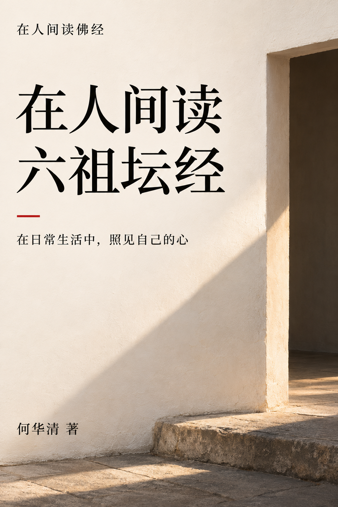

版本说明
在人间读六祖坛经
何华清 著
成书版 2026年11月
本书以宗宝编《六祖大师法宝坛经》为主要底本，沿十品展开为十章四十二节。所用经典版本、名相与各节对应关系，见附录一至附录三。
书中部分生活记述取自作者日记及沙龙演讲，另引诗集《静谧的狂潮》中的四首诗。篇名、页序与取材范围见附录四，相关章末亦列出处。
经文引句作繁简转换，原诗保留字词与分行。经典叙事、作者旧作自述与帮助理解的设例，分别在正文或出处中说明。
在日常生活中，照见自己的心

在人间读六祖坛经
何华清 著
成书版 2026年11月
本书以宗宝编《六祖大师法宝坛经》为主要底本，沿十品展开为十章四十二节。所用经典版本、名相与各节对应关系，见附录一至附录三。
书中部分生活记述取自作者日记及沙龙演讲，另引诗集《静谧的狂潮》中的四首诗。篇名、页序与取材范围见附录四，相关章末亦列出处。
经文引句作繁简转换，原诗保留字词与分行。经典叙事、作者旧作自述与帮助理解的设例，分别在正文或出处中说明。
我在一篇旧演讲里说过，刚开始写日记的时候，连一百字都写不出来。
后来写得多了。有时一天的事情记完，话还没有说完；有时坐在那里，明明没有多少东西可写，又不肯放过自己。学过什么，做了什么，哪些地方仍然不满意，都想问个清楚。日记里的“我”常常忽然变成“你”，仿佛有另一个人坐到对面，追问刚才那番解释。
最难回答的，往往是一些小事。已经知道要体谅别人，为什么开口还是那么急？已经认了错，为什么后面还跟着一句不服气的话？愿望立得很大，眼前这件应该做的事，为什么又没有做？
当时写下这些问题，并不等于已经有了办法。有的缺点刚刚认过，过几篇又出现了；有的段落前面还很有信心，写到后面，自己先发现刚才又在找理由。我也会把自己说得很重，仿佛责备得足够严厉，明天就能完全不同。字留在纸上，日子却还要一天天过。
现在回看，这些没有整理得十分漂亮的地方，正是我想带来读《坛经》的部分。
《坛经》里也有人拿着已经熟悉的经句来问，有人用功多年，仍在一处理解上走不出去。法达诵经三千部，礼拜时头却没有落地；智隍长坐二十年，仍须让自己的所得受到追问。读到这些地方，我很难只站在旁边评论他们。自己曾经拿什么来证明已经明白，又有哪些话听来不舒服，便不愿再听，书页会把问题送回来。
一个卖柴的人，因为听见经句而求法；一位老师送弟子到河边，后来弟子又要独自走下去。经中的人物有去有来，问的问题各不相同。我们可以顺着他们的处境去读，先知道这句话为什么在这里说出，再看看它怎样照到自己的生活。
写这本书，我想把两种阅读放在一起。一种读经典，尽量认清原文的意思与前后关系；一种读自己，回看那些已经做过、说过、想过的事。经文不能只用来为我原先的想法作证。若它触到了我不愿承认的地方，也得在那里停一停。
有些经历取自我过去的日记，有些取自沙龙演讲的整理稿。当年的事情与想法，带到今天这次阅读中，常会露出另一面。旧稿没有留下的经过，便不补成圆满的故事；当年的认识，也留在当年的位置。书中还穿插了几首我写过的诗，保留它们的行句与感受。另有帮助理解的设例，与旧作自述分别标明，具体取材见章末及附录。经中人物、神异与传承故事，则依《坛经》的宗教叙事介绍。
自性、见性、解脱、成佛，都有其佛教修行的含义。生活中的一次改变，可以使我更认真地求问，却不能代替对这些深义的学习。懂得一些处事的方法以后，还有更多尚未认识的地方。这一份不懂，也可以诚实地带进书里。
本书以宗宝本为主要底本，依行由、般若、疑问、定慧、坐禅、忏悔、机缘、顿渐、宣诏、付嘱十品，分成十章四十二节。章末保留原典出处，方便回读。不同的修学传统采用不同的说法与次第，本书围绕所选底本展开，不以一句禅语裁断其他法门。
四十二节可以顺着读，也可以先从自己最有疑问的地方进入。有些话读过一遍便记住了，有些要隔一段日子，遇见一件事，再回来读。自己的处境改变，原来以为已经明白的一句，也许又显出陌生的一面。
先从一句迟迟留在心里的话开始。把白天没有想通的事带过来，我们翻开书。
前言所依据的十品结构及正文，见宗宝本《六祖大师法宝坛经》，《大正藏》T48，no.2008；电子文本来源为台大佛学数字图书馆所载CBETA文本。写日记的起步取自《一周一会》華清阁线下沙龙演讲汇编中《相续的力量》，实际文件第8页；“我”与“你”的自问方式亦见日记汇编多篇，具体取材说明见附录四。
有些话，白天已经说完，晚上还在心里继续。
譬如，几个人商量一件共同要做的事。你提前联系了场地，问过时间，连大家可能遇到的困难也想了一遍。讨论快结束时，有人说了一句：“你这么热心，还不是想让大家都听你的。”
你愣了一下。当时在场的人多，有些话没有说出口，事情便这样过去了。
回家的路上，你开始想起自己本来可以怎样回答。对方说这句话时的神情，也越来越清楚。到了晚上，手里洗着碗，心里已经重新开过几次会。每一遍，你都比上一遍说得有道理。那些当时没有想起来的事实，终于全部想起来了。
可惜，对方并不在场。
旁边的人问你明天几点出门，你没有听见。他又问了一遍，你的语气有点急：“不是告诉过你了吗？”
说完，自己也知道，这个人并没有惹你。
水还开着。那场下午的争执，已经跟着你进了家门。
我们通常很清楚，别人说了什么。至于那句话进来以后，自己的心又做了些什么，未必同样清楚。
起初，只是一句让人不舒服的话。后来，心里渐渐有了更多的话：他从来就不尊重我；大家是不是也这样看我；我做了这么多，原来在他们眼里竟是这样。
其中有些也许有事实依据，有些还只是猜测。可是在委屈最重的时候，它们很容易连在一起。一个人的一句评价，慢慢变成了所有人的态度；一次没有说清的争执，慢慢变成了对自己这些年付出的判决。
于是，我们越来越想把那个人叫回来。请他坐下，听一听自己究竟做过多少事，吃过多少苦。最好，在讲到最后的时候，他能低下头，说一句：“是我错怪你了。”
想到这里，或许可以停一停。
那句话让我们难受的地方，开始显出来了。我们希望自己的付出被看见，希望善意得到公正的理解。这份希望原本很平常。谁辛苦了很久，会愿意只得到一句刻薄的评价？
只是，当“他必须承认我”成了心里唯一的要求，接下来的日子，也就越来越难过。对方不开口，自己便一直等着；对方照常吃饭说笑，自己又添了一层愤怒：他竟然一点也不在乎。
连能不能好好吃一顿饭，都开始取决于那个人有没有认错。
读《坛经》，我们可以把这样一颗尚未平静的心带进来。
在《定慧第四》中，惠能讲“无住”，直接说到“言语触刺欺争之时”。原来，这部常被人谈得很高远的经典，也把目光放在言语相伤的地方。接着，经文说：“于诸法上念念不住，即无缚也。”《六祖大师法宝坛经·定慧第四》
“住”这个字，可以先从自己的经验里慢慢体会。
事情已经发生，记得它很自然。有时我们还需要把经过记清楚，分辨责任，决定以后怎样相处。可在反复回想的时候，心也可能渐渐只认定一种解释，再也容不下别的可能。
他就是这样的人。我受过这样的委屈。他只要不道歉，这件事就永远过不去。
这些话在心里说得久了，眼前再发生什么，也都被拉回旧事之中。他沉默，是心虚；他解释，是狡辩；他向别人笑了笑，又像是在有意轻慢自己。我们甚至已经准备好了下一次争吵，只等他开口。
经文所说的无住，指向见性与解脱。刚开始读经，可以先从这里辨认系缚怎样发生：一件旧事，怎样占据了许多尚未发生的时刻。
不过，才读到这里，我们可能又给自己加了一条要求：既然读了佛经，就应当赶快放下。
饭要照常吃，脸上要照常笑。那句话一浮起来，就立刻把它压下去。压不住，便责备自己：怎么这样没有修养，怎么学了这么久，连这点事都过不去。
原先是气别人，现在连自己也一起气了。
《坛经》解释“无念”时说：“于诸境上，心不染，曰无念。”同一段还明确批评把一切念头都除掉的理解。它所谈的心，仍有见闻觉知，仍能分辨眼前的事。《定慧第四》原文
因此，我们可以先承认此刻的实情：那句话伤到了我，我还在生气，我很想反击。
承认以后，再往下看一点。自己准备说出去的那句话，想达到什么结果？是把事情讲清，还是也要找一个最疼的地方，扎对方一下？
这个区别，常常就在几句话之间。
“你说我想控制大家，具体是指哪件事？”这句话还有继续交谈的余地。
“你这种人，根本不配别人对你好。”这句话一出口，争执便又多了一层。我们已经把受过的刺，换了一种说法递回去。
有时，话已经到了嘴边，我们才发现自己要做什么。那一刻，未必已经平静下来，却可以先把这句话留住。等一等，重新想想怎样说。
明天，该澄清的事实仍然要澄清。失实的指责可以明确反对，越过界限的要求可以拒绝。若一种相处持续带来伤害，也需要认真考虑怎样改变它。回头看自己的心，会使这些事情做得更清楚。
而且，看得仔细一些，也可能发现一句难听的话里，有一件自己一直没有留意的事。
那天商量事情时，我们确实出了很多力。可在联系场地之前，有没有问过别人是否愿意参与？列好时间以后，别人提出困难，自己有没有真正听进去？所谓“大家商量”，是不是只剩下让大家接受已经定好的安排？
倘若确有这样的地方，就值得改。
自己的辛苦确实存在，替别人作决定的习惯也可能存在。两件事可以同时是真的。我们能够珍惜自己的付出，也能够承认其中需要调整的部分。
这一步很难。尤其当对方先伤害了我们，承认自己有不足，仿佛就等于在争执中败下阵来。
可是，下一次做事之前，多问一句大家的意愿，究竟损失了什么？那些被忽略的人终于能够开口，共同做的事也多了一分真实的商量。改变从这里发生，已经有它自己的价值。
读经读到这样的地方，书里的话才开始与手上的事相接。
我们也许仍会写一条消息，把那天下午的事说清楚。写到一半，发现自己又在揣测对方的动机，便把那几句删去。留下事实，留下自己的感受，也留下一个可以回答的问题。
对方可能认真回应，也可能继续敷衍。一次谈话有它的限度，一段关系要怎样继续，也需要双方的行动来说明。我们先把自己这一句话说得诚实、清楚，再看接下来发生什么。
那份委屈，也未必因此立刻消失。
过几天，走过开会的地方，仍可能想起当时的神情。又一次忙到很晚，也可能觉得不值。我们可以留意，那时自己怎样重新评价眼前的人，怎样对身边的人说话。若又把怨气带给了无关的人，就把刚才说重的话收回来，道一声歉。
下午那个人，也许始终不会给出我们期待的道歉。想到这里，心里仍会有些沉。今后怎样与他共事，哪些条件需要说清，可以慢慢决定。但眼前有些话，已经听漏了。
今晚，水还在流，手里的碗还没有洗完。
旁边的人刚才问的是明天几点出门。那句话其实很简单，他只是在想，早餐要不要早一点准备。
你把水关小，转过身来：“刚才没听清。你再说一遍。”
翻开《坛经》的第一品，我们见到的是一场讲经法会。官员、学士、僧尼与在家人聚在堂中，等着听惠能说法。坐在众人面前的人，已经被尊为大师。可他开口讲自己的来路，讲的是父亲早逝、家境贫困，以及在市场卖柴的日子。
依宗宝本的叙述，惠能给客人送柴，收了钱，走到门外，听见有人诵读《金刚经》。经文使他有所领悟，接着他追问：读的是什么经，从哪里学来？得知黄梅五祖弘忍教人受持此经，他想去求法。出发以前，还有一件事需要安顿：老母亲往后怎样生活。
有人拿出银钱相助，惠能安置好母亲，才动身离去。我们的目光急着跟随一个人去开悟，留下的人却仍然需要衣食。《坛经》用短短几句写完这个过程，求法的路便有了人与人之间的牵连。惠能能够出发，有自己的发心，也有陌生人的成全。
到了黄梅，五祖问他来自何方、求些什么。惠能回答自己是岭南新州百姓，远来礼师，只求作佛。紧接着，问答触及他的出身。惠能说：“人虽有南北，佛性本无南北。”
在家乡之外，在有学问的人面前，一个卖柴的人，这样回答了自己的来意。
我们对人的判断常常来得很快。名字还没有记住，已经看了他的衣着、职业，听出他的口音。一个人刚开始发言，我们便衡量他读过多少书，做成过什么事，配不配来讲这个问题。一项能力上的差别，就这样被推成了整个人的高下。
设想一位没有读过多少书的长辈，想参加读经。他翻了几页，生字太多，便把书合上，说：“这个我学不了。”有人劝他有信心，课却照旧往前讲。等大家谈到这一品的意思，他连经文中的几个人名还没有认清，也就不好意思再问。
若带读者肯把一段读慢些，把生字标出来，他便能跟上几句。读到“佛性本无南北”，他问：那为什么一开始还要问惠能是哪方人？这已经是一个关于经义和叙事的问题。原先卡在字音上的人，也有自己的理解要说出来。
佛性在经中指向见性成佛，不能拿学识、口音、职业来量取。承认这一点，会改变我们对初学者的耐心。识字和理解的困难，需要实在的帮助；若另给这个人划定一个永远只能旁听的位置，就使身份先于学习作了判决。
不过，惠能的回答也没有停在争取平等相待。他远来礼师，有一个明确的所求。问答之后，五祖让他随众作务，他被安排到后院破柴踏碓，经过八个多月。经文没有立刻替这个卖柴的人换上一副体面的外观。
学习开始了，日子往往仍是原来的日子。第二天照样要上班、做饭，别人也未必察觉有什么变化。听到一句话时的振奋，慢慢要经过这些平常时刻。若总等着旁人承认自己已经不同，用功就又被系在评价上。
惠能的故事把两件事并排放着：佛性无差别，眼前仍有要做的事。那句回答没有使舂米变得轻松，也没有使求法结束。直到一个童子从碓坊经过，唱起廊壁上的偈，新的因缘才来到这个一直劳作的人面前。
五祖让门人各作一偈，呈示自己的见解。众人很快开始猜测谁会被选中。神秀是教授师，大家觉得衣法自然会传给他，便不再用心呈偈。
原本要各自照看的心，被一个尚未公布的结果代替了。大家只等宣布，神秀却没有这样轻松。
《坛经》写他几次想去呈偈，走到堂前又退回来，忧惧不安。他担心自己的动机：求法是好，若想夺取祖位，就落入了凡心。后来，他夜里把偈写在廊壁上，仍不知道老师将怎样评价。经中的这份犹疑，使人看见一个求学者的难处：想知道自己的见解究竟到了哪里，又害怕多年用功经不起这一问。
偈中说：“心如明镜台”，接着要求时时拂拭，不使沾染尘埃。心像一面镜子，烦恼像尘土，用功便是反复清理。这个比喻容易懂。发现自己容易动怒，就在开口时多加留意；发现自己贪图赞扬，就学着在没有掌声的时候把事情做完。
五祖对众人说，依此偈修有大利益；私下又告诉神秀，尚未见性。前一句承认修习的作用，后一句把问题推向认识本心、见自本性。若只挑其中一句来读，便会把这场问答变得太简单。
惠能听见童子唱偈，请人带他到廊壁前。他不识字，又请张日用读给他听，随后托人写下自己的偈。在宗宝本中，偈是：“菩提本无树，明镜亦非台；本来无一物，何处惹尘埃？”
镜台、尘埃以及忙于拂拭的自己，都被带进了追问。我们以镜子譬喻心，读着读着，却可能真的在心里立起一面东西，认定必须把它擦成某个永不改变的样子。“本来无一物”触及的，是对所立之相的执取。经文随后仍讲修行、教化与利益众生，把这首偈读成凡事无所谓，便接不上后面的道路。
生活里有一种相近的纠缠。譬如一个人认真改脾气，在本子上记自己每天有没有发怒。前十六天都记得不错，第十七天却在忙乱中吼了家人。晚上翻开本子，他迟迟不肯落笔，最后甚至想把前面的记录一并划掉：既然又犯，原来的努力还有什么用？
原本帮助观察的记录，现在使他无法诚实记下这一天。他只愿留下自己从不发怒的样子，一次失手便使整本记录都显得不值得保存。家人还在等他解释刚才的话，他却坐在本子前，忙着判定自己有没有资格继续修行。
他真正能做的事情并没有消失。承认今天发了火，去向家人道歉，看看忙乱中忽略了什么，下次怎样处理。这一页留下一个过失，记录才继续与生活相接。维护一份完美记录的心松开一些，才能认真对待那个受了伤的人。
两首偈也会照出读者的习惯。有人只想知道谁赢了，选定一边，便把另一边的用功一概看低。故事讲离执，读者却从中得到了新的胜负。回到五祖让门人呈偈的起点，问题本来交给了每一个人。别人怎样回答，不能替自己交出那份见解。
在宗宝本的叙述中，五祖来到碓坊，看见惠能腰间系石舂米。他问米熟了没有，惠能回答米早已熟，还欠筛。五祖以杖敲碓三下而去，惠能领会，三更入室。
五祖为他讲《金刚经》。讲到“应无所住而生其心”，惠能言下大悟。
这段传法写得简短。我们今天也能在书中读到同一句话，甚至读得很熟；可熟悉经句，与经中所写的明见本性，显然还有距离。越急着复制那一夜，越容易先把开悟想成一件必须取得的东西。
“住”在日常经验里有许多样子。我们凭一个身份安心，凭一次肯定确认自己的价值，凭某个结果决定这些年的努力是否值得。家人提出异议，听来便成了对自己能力的否认；事情受了阻碍，过去的付出也仿佛全部失去意义。心抓住一处，就要求周围的一切都来证明它。
经句同时说“生其心”。无所住与生心相连，眼前的事并未被撤去。担负一件事，仍有具体的行动要作，有他人的处境要照顾。
设想一个人替小店排好每周的班。下午客人少，他便只留一人看店，把另一个人的班移到晚上。表贴出来，店员说下午忙不过来，他有些不耐烦：“已经按客流算过了，怎么还不够？”
后来有一天，他自己值这个班。送货的车刚到，店里也来了客人。收货要点数，货箱挡着通道，柜台前又有人等着付款，他只得请送货的人多等一会儿。原先统计的是来买东西的人，没有计入同时要做的事。排班表便得重新商量：哪些货能改时段送，哪一天需要有人提前来。调整会增加一些协调，也未必立即省下费用。他仍要把店经营下去，却不能再要求一张算好的表证明自己没有遗漏。
惠能随后发出五番惊叹：本自清净、本不生灭、本自具足、本无动摇、能生万法。这五句相互照应，说的是所悟的自性。单把“本自具足”抽出来，容易听成自己的习惯、欲望与判断已拥有全部答案。这样读，刚才要松开的执著，又披上了自性的名义。
若一句“我本自具足”就能挡住所有追问，便很难解释惠能为何远赴黄梅，又为何受五祖讲说《金刚经》。这里的本具，始终在见性与离执的脉络中。
五祖随后的嘱咐，使悟道向外展开。他要惠能善自护念、广度有情，使教法得以流布。这份认识不会只被收藏为自己的特殊经历，后面还有教化众生的承担。
同时，眼前还有更迫切的事。传承可能引起争夺，惠能必须离开黄梅。他受了衣钵，听完教诲，却不知道南行怎样走出山路，于是问老师，如何才能到江口。
经中的大悟与这个问路的人，原来并不相隔。那一夜的深义没有把日常需要抹平。灯下讲法结束，师徒还得走到外面去。
惠能说自己是南方人，不熟悉山路。五祖听了，答应亲自送他。
经中记述，他们来到九江驿，五祖让惠能上船，自己摇橹。惠能请老师坐下，说应当由弟子摇。五祖回答，该由我渡你。惠能于是说：“迷时师度，悟了自度。”
一个“度”字，在渡江与解脱之间转了过来。眼前的船要有人划，求法的路也有老师指引；到了自心的迷悟，指示必须在自己这里被认识、被践行。老师既不能替弟子迷，也不能把自己的觉悟当作一件物品交到弟子手中。
惠能南行以后，衣钵又引起追逐。在大庾岭，惠明追到，惠能把衣钵放在石上，隐入草莽。依经中所写，惠明拿不起衣钵，转而请求说法。那件原来一定要夺到手的东西，终于让位于一个关于自身的求问。
惠能让他回照本来面目，惠明悟后又问，所说之外是否还有密意。惠能回答：“汝若返照，密在汝边。”求问没有被引向更多可收藏的秘密，而是回到问者自己的认识。
衣钵本来用于表信，在追夺者眼中却仿佛包含了必须获得的一切。一个象征被拿在手里，是否就等于拥有它所指向的实质？这也是读经的人容易遇见的疑惑：得到认可、取得身份、记下几句难懂的话，便以为求法已有了可以倚靠的结果。
舟上的问答留下了另一种关系。老师愿意送，弟子愿意接过橹。惠能说自度的时候，仍然感谢老师的传法；到惠明悟后，他又说两人同师黄梅。明白与感恩能够并存，承担自己的修学，也没有使来路消失。
受到帮助以后，怎样接过属于自己的那一部分，日常学习中也会遇见。
譬如，一个人第一次主持读书活动，事前请老师帮忙准备。他们商量好每人发言五分钟，留一段时间共同讨论。活动开始，第三位参加者说到一件伤心事，忽然哭了；旁边的人又急着讲自己的经历。墙上的钟已经走过原定时刻，下一位还在等。
主持人看着事先记好的规则，陷入两难。马上打断显得生硬，任由谈话继续，又会把后面的人全部挤掉。他最终先问对方要不要歇一会儿，约好结束后再留一点时间，随后把讨论交给下一位。活动虽然按时结束，原先准备的问题却没有谈完，有人觉得还不尽兴。
下次请教时，他带回的便不只是“每人五分钟对不对”。他能说清现场发生了什么，自己怎样判断，哪些人的需要没有兼顾。他也得承认，选了一种做法，就会留下某些未能照顾的部分。老师可以继续帮助分析，却无法预先替所有相遇规定答案。
若事情顺利便说自己学得好，事情不顺就只说老师这样教，受教的人始终没有真正进入自己的行动。那份没有兼顾周全的遗憾，也不能交给老师代为承受。
那位初次主持活动的人，后来把规则重新写了一遍，另外留出处理临时情况的时间。他知道这仍不能保证下一次周全，却不再把一张准备单当作足以应付所有人的答案。第二次活动的门打开，他要自己面对进来的人。
惠能离开黄梅以后的经历，在《坛经》中并不平直。躲避追逐、隐在猎人队中，经过一段漫长岁月，才来到广州法性寺。经文在那里记下风幡因缘：风吹幡动，两位僧人各执一说，一人说风动，一人说幡动，议论不止。
惠能说，是仁者心动。
若把这一句当成物理说明，便会追问风是否存在、幡有没有移动，甚至以为只要心不动，外面的变化就会停止。可叙事接着写的是印宗问见性、问不二。它所追问的心，与正在执持、分别的用心相连，要顺着这场问答读下去。
生活中的争执也会暴露一种距离：眼前的事实尚未查明，我们已经忙于维护自己的解释。
譬如两个人商量步行路线。一个说近路省时，一个说那条路不好走。争了半天，地图还放在桌上，谁也没有再看。前者开始数落对方总爱添乱，后者则认定前者从来不顾别人。路线的长短渐渐退后，各自更懂安排的确信走到了前面。
直到同行的人问，近路究竟有多少台阶，他们才重新查图。一段路多远，路面怎样，同行者能走多长时间，都有可以了解的事实。察觉心里的胜负，有助于把目光放回来，却不会自动替他们查明这些条件。
印宗与惠能的续问，还把理解引向更深处。印宗问禅定与解脱，惠能转述《涅槃经》有关佛性的教说，提到蕴与界等，说明凡夫见二、智者了达其性无二。这里谈的是法性与见性。把相反意见各取一半，或笼统说一切都一样，都还没有触及所问的不二。
这个地方不必急着换成一句容易懂的话。风幡问答使人回看分别与执著，后面的佛性之说则要求进一步学习。善恶的行为、迷悟的认识，在经中仍有分别；不二之义若被拿来抹平这些差异，反而使修行失去方向。
这场问答里，印宗也值得留意。他原本正在讲经，惠能是来到现场的行者。听见发言，他邀请对方坐上席，继续问其义理。到了这里，故事中的相遇并未凭一句奇语就结束，双方还有可以相互辨明的内容。
依经中记述，印宗后来为惠能剃发，愿意事之为师。一个正在讲席上的人，改变了自己在这场相遇中的位置。
这种改变会触动我们的难处。做了多年老师，忽然听到学生指出自己漏看的地方；主持一项事务很久，新来的人却发现原有方法的问题。意见是否成立，本来可以讨论，心里先升起的却可能是失面子的感觉。于是，公开认可变得困难，要等一等，要换一个由自己说出来的方式。
印宗没有把问答停在自己的身份上。他已有的学问，使进一步的请问成为可能；已有的位置，也没有挡住后来的礼敬。经文从风幡的争论写到这里，人的相待已经随认识而改变。
再回到桌上的地图，那两个人最终未必采用同一条建议。有些事实查明以后，原来的方案确实更合适；有些新条件又要求改道。能否采纳，取决于它适不适合眼前的人。若一项好办法必须先被改口说成自己的发现，才能让自己放心接受，那份争执还在继续。
本章依据宗宝编《六祖大师法宝坛经·行由第一》，《大正藏》第48册，第2008号。所述求法、偈颂、夜间传法、渡江、惠明追衣和风幡问答，均按这一版本的经中叙事展开，未把叙事细节另行宣布为经独立考证的史实。经文短引作繁简转换，现代人物与情境为设例。
可回读原典PDF第8—12页：第8页为出身、闻经、安置母亲与求法；第9—10页为两偈、传法及渡江；第11—12页为惠明、避难、风幡与印宗问答。此处页码按PDF文件页序，较页面印刷页码大一。
一篇题为《自寻烦恼》的旧日记，记着我修电脑的经过。电脑坏了，日记没法写，我打了几个电话，又在网上找办法，折腾到夜里两点多。那时候，要求并不高：只要能够打开网站就行。
到了第二天晚上，本来已经想放弃，后来再试，竟把驱动装好了。电脑能用了，我却很快发现，开机没有以前快。先前说能用就行的人，转眼又开始嫌它慢。
原先答应自己的条件已经实现，心却马上把条件往前挪了一点，仿佛从来没有说过只要能用。在两台电脑之间来回折腾时，我心里很急，外表却好像很淡定；平时把自己看成有耐心、不怎么执著的人，到了这件小事上，竟很难与自己的评价相称。
那时我也已经会说无常。电脑刚坏，便提醒自己可以补救，不要陷在情绪里。道理没有缺席，我仍然急躁；修好时一阵欢喜，接着又计较速度。熟悉的词和实际的心行，挤在同一篇日记里。
《般若第二》用说食不饱作譬喻：终日口念般若，却不认识自性般若，犹如只说食物的名字，说上一天，身体仍然需要吃饭。读到这里，那个已经会讲无常、又在电脑前急躁的人，并不站在经文之外。
般若在经中被解释为智慧，波罗蜜是到彼岸，指向破除愚迷与执著、见性解脱。会装驱动、会找解决办法，是处理故障的能力；用这些能力时，心又在追逐什么，才是这段讲说继续问到的地方。
惠能以水与波浪譬喻著境所起的生灭，以水的通流譬喻离执。故障、修复、开机变慢，每一个变化都牵动着心。我忙于让电脑回到想要的样子，也忙于让自己重新成为一个满意的人。事情稍有差池，刚刚得到的安稳便又失去。口里说无常时，心仍在要求眼前的一切照常。
电脑出了故障，可以修；速度慢，也可以想办法改善。可解决问题与不断增加满足的条件，常常混在一起。原本只需要打开网站，等到能用了，怎样才算够便又变了。若一概把急躁说成爱惜时间，这一点不满足就藏了起来；若为证明自己不执著，连实际问题也不许处理，同样是在维护一个样子。
日记写到后来，我劝自己：“慢了就慢了吧，还能用就行了。”一句话把要求拉回了起点。它能否进入心行，要看随后怎样使用那台电脑，怎样面对下一件不合心意的事。能分析自己的执著，并不妨碍心继续攀缘；有时甚至会从分析中，又取得一份自己已经看明白的满足。
那台电脑终于可以写日记了。留下来的文字，却没有替写日记的人保持一个淡定的样子：同一个人，一面讲无常，一面又嫌它开得太慢。
《般若第二》一面说，般若之智世人本自有之，一面又说，不能自悟，需要大善知识指示。读到这里，问题很自然：本来就有的东西，为何还需要别人教？别人能教，又为何不能替我们完成觉悟？
这两问，惠能没有分开作答。善知识能指示正路，使人自见本性；迷妄的执著，仍要由学人以般若观照而破除。教导真能发生作用，又没有谁可以把自己的解脱转交给另一个人。
读经时，有一种经验接近这个关节。字都认识，意思却总被读成惯常的样子。有人指出漏掉的转折，说明问话原来针对什么，把前后文连起来，疑惑才开始松动。书页一直在那里，帮助也实实在在发生了；最后看懂的那一下，还须发生在读者自己的认识中。
譬如在一次读经共学中，有人把“无念”理解为不许起任何念头。他试了几天，越想把思想赶走，思想越多，便问是不是自己没有根器。带读的人翻到同品后面的说明，给他看：经文把百物不思、令念断绝的理解称为法缚、边见。原先被他略过的几行，恰好在回答困住他的事。
听明白以后，他先松了一口气。可接着又问：“那我要怎么做，才能保证以后都不被念头带走？”他仍想拿到一个保证，只是从保证没有念头，换成了保证永不染著。
这时，带读的人能够继续解释经义，却不能替他照见每一个当下。同事受到称赞时，他心里为什么发酸；自己被指出遗漏时，为何立刻想起别人的过错；这些细处需要回到生活中，由他自己辨认。准确的解释给出了方向，方向还要在实际修学中被体会。
请教未必总使人舒服。别人让我们把原文再读一遍，我们却只想听见自己理解得不错；别人指出所举例子并不合适，我们又觉得他太拘泥。那份急于得到认可的心，恰好影响了如何受教。
惠能也提醒，若执定必须依靠外在善知识才能得解脱，就失去了自悟的要义。经中说“自心内有知识自悟”，随即指出，邪迷颠倒未除，外在教导也不能替人解除束缚。这里的向内，有严格的修行内容。拿它证明自己从此不必听人指正，同样偏离了般若观照。
受教者还有一份不易察觉的责任：把没有做到的地方如实带回来。读书共学中的那个人，下一次不只谈自己听懂了无念，还说起工作时的一场争执。他记得自己在愤怒中也想起经文，却随即用“他太执著”来评价对方。经义刚刚进入生活，就又被用来维护自己。
这样的坦白，会使请教继续深入。若每一次都只汇报已经明白的部分，师生之间便可能共同维持一种进步的外观。真实的困难在外观下面，长久得不到触及。
那一页经书后来多了几处铅笔记号。原先误读的地方划了一道线，旁边写着新的疑问。下一次还会问到什么，读者暂时不知道。书没有因为听过一遍讲解便合上，他也不再急着把页边的问号全都擦掉。
一篇旧日记，题目是《扫楼的时光》。那天上午上测量课，太阳很烈，我看远处的青山和云彩，觉得风景好，炎热也似乎退下去一些。下午又去扫楼。写日记时，手臂和脸留下红红的印记，疼痛已经没法只凭一句心境把它说过去。
那次劳作使我觉得赚钱不容易，也让我想到父母为我提供的条件。能读书、能谈自己的打算，有些负担早已由他们承担。我在这一篇里写下感谢，又问自己：“怎么能轻易地让别人放下不要伤心”。
自己说得熟练的放下，到了另一个人的生活里，究竟有多重？
《般若第二》解释“摩诃”，把心量比作虚空。山河大地、日月星宿、善人与恶人，都在其中。紧接着，它说自性真空，又提醒人不要著空。虚空能含万物，般若起用却了了分明；容得下，不是把一切看成模糊的一团。
一个人的生计、体力、要照顾的家人，各有具体条件。若只见到他舍不得，却不肯了解他为何舍不得，一句劝解便可能把他挡在外面。对方还在辛苦，我们已经用万事皆空替他的难处作了收束。嘴上仿佛放得很开，心里却没有给这个人留下多少位置。
自己的手臂晒疼了，疼就是疼；劳作过，才开始注意到挣钱所要付出的代价。别人的劳累却不等我体会才存在。我说自己容易满足时，究竟已有多少东西被人安顿好了？那份由他人照顾而来的从容，不能直接拿来衡量另一个处境不同的人。
经文将自性真空、无有一法可得，与心量广大、能含万法连在一起。心所执取的，也包括对人先有的判断：他就是爱计较，他就是放不下。判断一经确定，后来出现的事实便很难再进来。眼前的人说了些什么，我们也只听见自己已经认定的那一层。
经文把善人、恶人都放进虚空的譬喻，又说不取不舍、不染著。行为和后果仍须分辨，确有的伤害要停止，责任要承担；但一个人不能先被缩成一个名字，再由我决定值不值得认真看。般若的无所执取与了了分明，须一同体会。
劳作后的那篇日记，也没有一路走向宽阔。刚刚觉得不该轻易劝人，转过几行，我又在劝自己不必在乎晒伤。疼痛一来，便想赶快把它解释掉；解释完，又继续感到疼。自己的感受尚且未必愿意如实承认，面对别人的难处，却容易那么有把握。
“不要著空”的提醒，就在这里落下来。如果一个空字被用来取消人的劳累，取消对后果的照顾，它便成了离开现实的一条捷径。说话的人省了力气，被他说到的生活却原样留在那里。
一天的劳作没有让我懂得所有人的辛苦，却让那句顺口的放下不再那么轻。日记留下了晒伤的疼痛，也留下急于解释一切的自己。这个人尚且需要被慢慢看清，眼前的别人又何尝只是一句话就能说完。
有人会给自己的修行安排一个将来的日子。等孩子长大，等手上的事情结束，等有了安静的住处，便认真读经、静坐、学习。那个日子每次想起来都很清楚，日历却一页页过去，新的事情总会接上来。
安静的时间、可靠的引导、基本的生活保障，都能帮助修学。问题出在把毫无牵挂当作开始的条件。在等待的这些年里，心已经不停地活动，也不停地作出取舍。
《般若第二》的无相颂说：“佛法在世间，不离世间觉。”随后又谈正见与邪见，把身在人间与如何觉悟连在一起。世间生活不会自动成为修行，却处处显露着需要觉察的迷惑。
譬如傍晚买菜，摊主忙着称下一位客人的东西，多找给我们一张钱。走出几步才发现，心里马上有了几种说法：他一天卖那么多，少这一点也没什么；刚才称的菜似乎还带着不少水；回去说，他未必认得清。
钱还捏在手里，我们已经替留下它准备了几个理由。若是少找了，刚才那几步一定会走回去，差多少、拿了几张，也会记得很清楚。事情并没有复杂到难以判断，难的是自己的利益已经在判断中说话。
经文里谈贪，离这一刻并不远。它未必每次都以宏大的野心出现，也会藏在一项自己觉得无伤大雅的便利里。回到摊前把钱说明白，事情便能结束；如果留下，后来再怎样解释，也绕不开刚才已经知道的那一点。
这里没有人等着给修行打分。摊主可能道谢，也可能只忙着继续做生意。钱归还以后，我们仍要拎着菜回家，赶上那顿已经有些迟的晚饭。那个原想等到清闲时才开始的用心，已经遇见了一项具体的取舍。
无相颂还说到常自见己过，以及“不见世间过”。把这一句用于自己，是检查好责人过、随憎爱而转的习惯；若把它递给别人，叫人不许指出问题，读法便变了方向。
假如摊主少找了钱，把金额核清，指出遗漏，都是应当做的事。若对方拒不承认，也可以寻求适当的解决。事实需要处理，不必靠把委屈咽下去证明自己懂佛法。与此同时，一次找零差错是否足以证明此人一贯奸诈，又是另一个问题。我们有时在维护自己权益的同时，也顺手给整个人下了判决。
常自见己过，使我们看见这些混在一起的心行。争执时，事实的说明什么时候变成了羞辱，合理的请求什么时候又被愤怒推着增加，都是修学能照到的地方。至于他人确有的过失，仍按事实与责任处理。
经文以正见、菩提与见性指向出世的觉悟。买菜时的一点取舍，使迷惑有了可辨认的形迹；贪怎样起来，又怎样被自己维护，仍须向根本追问。
那位买菜的人，仍要把菜拎回家。我们也还要吃饭、说话，把一天过下去。我写过一首《灶》：
厨门里散落的光
烟缭绕
气腾跃
火焰明黄
烟火气与你
融和人世间的暖意
静谧处
蓬勃始
本章依据宗宝本《六祖大师法宝坛经·般若第二》，重点参照口念与心行、摩诃与心量、般若波罗蜜、善知识与自悟、无念及无相颂。生活例子帮助进入经义，不把一般心理变化直接等同见性或解脱。
可回读原典PDF第12—15页：第12—13页为般若、心量与彼岸等说明；第14页为善知识、自悟及无念；第14—15页为无相颂。页码按PDF文件页序，较印刷页码大一。经文直接引文作繁简转换；未注明旧日记来源的现代场景为设例。
第6节取自《日记合集 2012-2014》中的《自寻烦恼》（原PDF实际第33页）；第8节取自《扫楼的时光》（原PDF实际第23页）。叙事依据旧日记记载，回看经义的文字为本书新写；日记引句只整理标点与断行。
第9节完整引用作者诗《灶》，见《静谧的狂潮》PDF实际第57页，诗页53。
善事做过以后，往往留下一些凭据。一张捐款单，一份参加活动的记录，一张物资送到后的照片。凭据记着钱物的去向，也可能慢慢承载另一种期待：这些应该算得上什么吧。
我们想知道，付出有没有被看见，也想知道自己积累到了哪里。若有人说还不够，便想再添一些；若有人说已经很多，心里才能安稳。
《疑问第三》从这样一问展开。韦刺史转述有关梁武帝与达摩的故事：皇帝造寺、度僧、布施、设斋，问有何功德，却得到实无功德的回答。韦刺史不明白，便请惠能解释。这个转述在经中引出福德与功德之辨。
惠能说，造寺、度僧等属于修福，不能直接将福便作功德。继而说：“功德在法身中，不在修福。”又说：“见性是功，平等是德。”后面的解释谈到谦下、礼敬、无染与不轻慢人。
所问的尺度于是改变了。造了多少寺，布施多少财物，都能够列举；能否由此证明自己已见性，已离我慢，则须另作审察。钱物能够进入账目，账目的总数却不能替代对自心的认识。
若一听实无功德，就觉得布施白做了，也仍在同一笔账里打转。原先为了证明所得而做，听说不能这样证明，便想撤回。饥饿的人曾经得到食物，需要学习的人因此能够继续，那些实际帮助并没有消失。经文区分修福与功德所指的深义，并未把已经发生的利益一笔抹去。
设想有人每年参与一次物资募捐。衣物、粮食、运费，件件都记得清楚。整理凭据时，他感到满意：今年比去年多了一些。可下一次讨论安排，有人提出先别照旧购买，应该问问接收方现在需要什么，他便有点不耐烦。过去一直这样做，也有收据，何必增加麻烦？
那份已经熟悉的善行，使他不愿重新了解。账上有多少，比眼前的人需要什么更容易看见；有了凭据，自己的疑问也仿佛可以结束。
若继续问下去，才知道去年送去的一部分东西并不适用，接收方又不好意思说。他自然会难堪，甚至觉得这么认真还要受挑剔。到这里，一项善行同时显出了福益与修学的问题：东西已经付出，用心却还有需要照见的地方。
下一回按需要重新安排，帮助才更合宜。那份难堪则要自己面对。原来，我们在乎对方过得好，也在乎自己的好意不受质疑；一旦两者发生冲突，就能看出心中哪一项更难放下。
惠能说到“心常轻人，吾我不断”，使功德之问回到这类隐微处。觉得自己肯施予，便比接受者高一层；觉得自己做得多，就不必再受提醒。善行的数量增加，轻慢也可能随之增加。两者不会因出现在同一个人身上，就自动互相抵销。
从见性、平等与无染读下去，连自以为比只求福的人高明的念头，也值得警惕。这样的念头一起，新的比较又接着旧账写了下去。
账目仍然需要认真保存。物资从哪里来、送到哪里、还余下多少，关系到参与者的信任。看清心中的计较，不必毁掉清楚的记录。我们所需松开的，是以这些记录替自己完成全部修行的期待。
那位参与募捐的人，后来在清单后面加了一页，记接收方真正提出的需要。下次商量时，他带着两份材料来：一份说明已经做过什么，一份提醒还有什么没有做对。
人会向往一个可以安顿的地方。劳累时，希望那里少些争吵；失去亲人时，希望生命仍有归向；看见自身的无常，也会问，这一生结束以后将去哪里。净土的信仰触及这些追问，不能只用逃避现实几个字概括。
韦刺史问僧俗念阿弥陀佛、愿生西方，是否能够往生。惠能的回答，却把远近之问不断引向自性与净心。读者若熟悉别的净土讲说，到了这里，可能会感到差别。
《坛经》从顿教见性的立场作答。经中用十万八千的远近转说十恶八邪，又以身为城、心为地、性为王，解释佛与众生、慈悲与烦恼。所说的距离在问答中发生了转义，不能拿来作地理测量，也不能把这套自性阐释直接当作所有佛教净土教义的完整说明。
它的追问很切近：所求的是清净，贪瞋与伤害却仍被自己牢牢维护，这条路要怎样走？如果求往生的愿望从不触及现在的用心，愿望与行动之间就留下了一段空缺。
经文把慈悲、喜舍、清净、平直与佛菩萨的名号相联系，又把人我、贪欲、烦恼譬喻成山海与波浪。原本指向远方的求问，被带回听法者的身心。名号的庄严，开始追问这个人怎样生活。
譬如，一位多年念佛的长辈，听晚辈读了这段，便问自己往后的功课是不是都不必做了。晚辈刚学会一句自性净土，觉得足够回答一切：“只要心清净就行。”可长辈继续问，自己并没有清净到那样，念佛时也常有杂念，那么这句话究竟怎样落实？
问到这里，漂亮的结论便显出不足。长辈的愿行有其所依的教法，不能凭晚辈读到的一段话就轻率取消；晚辈也不能把自己暂时懂得的意思，当成对别人多年修持的判定。他们需要回到整段问答，辨明此处的用意，也向可信的师长请教不同说法之间的关系。
这份慎重不会妨碍当下的用功。那位长辈念佛以后，仍要与家人相处，也会在不顺意时发怒。发现自己一边向往慈悲，一边用恶言伤人，便有可以修正的地方。改过与原有的信愿，不必在一句草率的争论中互相排斥。
同样，把净土简单说成心情好，也不足以回应韦刺史的问题。往生与生命归向是宗教教义中的追求，《坛经》则以见性、净心等说明其顿教立场。一时心情舒畅，并不等于已经穷尽了这些深义。对尚未明白的部分保留疑问，比把所有名相换成日常感受更诚实。
净心之说还容易被误用到受苦者身上。看见别人遭遇疾病、贫困或伤害，便说他心不够净，这已经把修学中对自身的要求，变成了对他人遭遇的判词。现实苦难有复杂条件，清净之名不能替代了解与帮助，更不能替造成伤害的人免除责任。
经中将慈悲与观音相联系，至少让读者回头检视自己怎样面对一个正在受苦的人。能够帮助的事是什么，尚不知道的情况有哪些，对方是否愿意接受，都须认真认识。若只说一句他应该净心，自己便离开了，那份朝向净土的向往又如何进入慈悲的行动？
那位晚辈后来再次陪长辈读这一段，没有急着先讲自己的结论。读到不明白处，两人在页边留下记号，准备下次请教。长辈照常去做晚课，晚辈收起书；前一回争着裁断的事，终于有了继续学习的余地。
我在《脐带——致母亲》中写过：
迎接生命的第一缕阳光
始于一条温暖的线
五彩斑斓的
从有形到无形
拉动风筝的手
始终常在
旧日记《幻化多端的诡计》里，还留下了我的另一种口气：回听与母亲的微信交谈，听见自己说得很不好。
自己说过的话，又回到了自己耳边。我写道：“嘴里都是慈悲，但是心里却不是这样。”
把两份文字放在一起，诗里的珍惜仍在，日记里的傲慢也没有被它遮去。
《疑问第三》的净土问答之后，惠能说，若欲修行，在家亦得。韦刺史于是再问：在家怎样修行？法会终会散去，听法的人要回到各自住处，刚才明白的道理，将在那里受到检验。随后所说的无相颂，谈孝养父母、相互体恤、和睦、改过以及日用饶益，自性与净土的深义，也由此触及一个人每天怎样待人。
颂中的“心平何劳持戒，行直何用修禅”，很容易被读快。若只取何劳、何用，便仿佛持戒与修禅都可以放弃；可经文要求的是心平行直，随后又嘱咐依偈修行。前面的条件还没有体会，后面的否定却先被拿来使用，便成了为自己的习惯寻找方便。
把心平行直放回那次微信交谈，一句自我评价便远远不够。纵使意见有道理，说出去时是否轻慢，是否把亲近的人放在了必须听我说明的位置，仍要看。道理正确与否，不能替一种伤人的口气免除责任。
那篇日记反复提醒自己傲慢会伤人，也谈到教育、阅读与生活背景怎样影响人的认识。知道一些事，能够解释一些事，原本都有用处；若凭这些便觉得自己高过对方，解释也会成为压迫。慈悲这个词越熟练，越容易忘记，听者并不只听见这个词。
在家修行，也会遇见不一致。孝养父母，并不等于所有意见都须相同；相怜相让，也不能要求某个人永远不说自己的困难。需要商量的事仍要商量，能做到多少、哪里做不到，都可以说明。说明限度，与让对方难堪，并不是同一件事。
无相颂保留尊卑等传统社会的表达。读其中的和睦，要让关系里的每个人都受到尊重。若长幼之序成了持续伤害的理由，或所谓和气只靠最没有话语权的人保持沉默，便还没有认真面对相怜相让。认下自己的傲慢，也不能由此替所有家庭争执预先判定谁该退让。
颂里还说到逆耳之言与改过。最不顺耳的，有时竟是重新听见自己。那种自以为了不起，已经在日记里被认出，却不会因为写下傲慢二字便自动消失。惭愧可以是真的，用熟悉的道理保护自己的习惯，也可能同时还在。
“日用常行饶益”，须在这样的细处发生。认真对待家人要说的话，答应的事有变化便说明，需要帮助时把请求说清。它们并不显得高深，漏掉的时候，却会让另一个人承受。家里的日子之所以能成为修行，不是因为亲近的人理应容忍我们，而是这些相待没有哪一处可以永远置于修学之外。
惠能说完，告诉众人有疑可以再来。法会与家门之间留下一条往返的路：在书里明白一些，回家遇到新的困难，再带着它求问。那句关于慈悲的话，也仍要回到我怎样与家人说话之中。文字留下了当时的惭愧，下一次开口却还得自己面对。
本章依据宗宝本《六祖大师法宝坛经·疑问第三》，重点为韦刺史问功德、问西方及问在家修行。功德与福德的辨别按本品语境说明；净土部分保留《坛经》的顿教见性立场，不以生活类比穷尽往生教义，也不据此贬低其他修法。
可回读原典PDF第15—17页：第15—16页为功德问答；第16—17页为净土与在家修行；第17页为在家无相颂。页码按PDF文件页序，较印刷页码大一。经文短引作繁简转换；未注明旧日记来源的现代人物与对白为设例。
第12节取自《日记合集 2012-2014》中的《幻化多端的诡计》（原PDF实际第8页），只采用回听自己微信口气的记载。回看经义的文字为本书新写；日记引句只整理标点。
第12节另完整引用作者诗《脐带——致母亲》，见《静谧的狂潮》PDF实际第19页，诗页15。诗与日记并置，不推定二者的写作先后，也不补写母亲的反应。
夜里，一盏灯亮起来，桌上的杯子、摊开的书、落在椅背上的衣服，都有了清楚的样子。我们很少在这时候追问，先有灯，还是先有光。灯正在亮，照明也就在发生。
《定慧第四》用灯光说明修行中容易被分开的两件事。惠能说：“定是慧体，慧是定用。”又说：“灯是光之体，光是灯之用；名虽有二，体本同一。”他要讲的，是定慧一体、同时相应，读者却很容易把它们排成先后两道工序。
仿佛先把心彻底安顿好，才能开始明白事情；或者先将道理全部想通，再回头学习安定。如此安排，条理清楚，也给了自己一个等待的理由：我的心还没静下来，眼前这些混乱，暂时无从处理。
生活却已经来到门前。设想一家人准备搬家。日期定了，箱子还没有收好，有人催车，有人坚持每一件旧物都应留下。一个人嫌吵，独自进房关上门；另一个反应极快，谁说一句，他都能举出三条理由反驳。前者终于听不见争论，后者好像句句占理，屋里的事却没有因此清楚起来。
车只能装这么多，下午还会下雨。哪些东西先运，哪些另作安排，楼下搬箱子的人是不是已经撑不住，这些事实一直在场。争吵的人太忙，忙着责备、辩解，谁也顾不上把它们看全。
安静的外观与敏捷的辩才，都不能单独说明定慧。惠能紧接着讲心口相应：口说善语，心中却不善，便不相应；心口俱善、内外一如，才与所说之法相合。定慧由此触及用心的根本。若心仍在攀缘于胜负，嘴上把经义说得再周全，所说与所行之间的裂缝也还在。
这种裂缝，常在被人指出时显出来。一个人可以耐心谈论半天耐心，却受不了别人说他刚才打断了发言；可以赞成众人平等，却觉得自己的意见理当最后作数。我们知道许多道理，也擅长解释为什么这一次可以例外。
《坛经》在灯光譬喻之前说：“自悟修行，不在于诤。”这里针对的是学人争论定慧先后，以修行之名增加胜负与我执。原来用来照明的两个名字，竟被拿来证明自己高于对方。读者如果只记住了正确答案，却仍急着凭答案取胜，就又回到经文指出的地方。
听到相反意见时，胸口那一下急迫，最难遮掩。对方还在说，我们已经准备反驳，甚至提前认定他出于什么动机。此时，让那句话说完，会发生什么？也许他说得不对，需要指出；也许他说到了自己漏看的条件。两种情形都要经过实际的听与辨，不能在尚未听清时由自尊替我们决定。
灯亮起来，桌面的灰尘、没有收好的旧信，也会一同显现。读经所求的明白，能不能容得下自己的难堪：刚才确实想压过别人，确实希望大家都来称赞自己的安排。承认下来，便少了一层遮掩，也多看见了一点自己正在怎样用心。
在搬家的设例中，有人终于停下来，问那几件旧家具为什么一定要留。原来，其中一把椅子是老人多年用惯的。它要留下，并不妨碍另外几件送走。此前被说成全不讲理的要求，拆开以后，有了能够商量的部分。
定慧所指向的是自性与诸法的觉悟，远非办事效率。经文却也从心口、内外是否相应，问到眼前的用心。说得明白以后，手上的事怎样做，便开始显露我们究竟明白了多少。
楼下的人又喊了一声。那只最重的箱子还在楼梯转角，一双手已经托了很久。你下楼接住一侧，和他一起把箱子放稳。
我曾经为三块钱，找过许多理由。
那篇日记叫《自私 打开心量》，写的是拿快递。我不愿意去拿，又讲了许多理由，最后在纸上把原因认了下来：“其实我不想拿快递的原因就是舍不得快递费用而已，然后我用了很多冠冕堂皇的话来说理由。”
同一页里，我还写：“我连三块钱的快递都不愿意出了。”纸上已经谈到布施、众生和佛陀的身命，落到自己，却是一笔舍不得出的快递费。
我会说一些道理，也愿意讲给别人听，到了三块钱这里，却有了另一番取舍。数目很小，解释它的话倒不少。今天看这几行，最难绕过去的，并非钱多钱少，而是那些理由怎样遮住了真实的心意。
其实，一个人可以节省，也可以说自己不愿承担某一笔费用。这件事本来可以说清楚：钱该由谁付，自己为什么不愿意，是否还有别的安排。可我当时忙着找理由。那些理由说出来，原来的舍不得便藏到后面去了。
我在日记里说自己“不够真诚”。后面还有许多急着改过的话，这四个字却已碰到了当时的弯曲：不愿出钱是一件事，把它说成别的缘由，又是一件事。若听的人不知道这一层，彼此商量的就未必是同一个问题。
《坛经》说一行三昧，是“于一切处行住坐卧，常行一直心”。又说：“莫心行谄曲，口但说直。”
这句经文把那几行日记照得更清楚了。我既想省下钱，又想让理由听来无可指摘；说得越周全，那个很小、很真实的念头，反而越难开口承认。心里与嘴上往两个方向用力，自己还要维持它们都说得通。
人有时连自己都要说服。一个理由讲过几遍，渐渐觉得它就是全部原因。后来再有人问起，自己也能理直气壮地重说一遍。那层弯曲，便不只发生在我与别人之间，也发生在我怎样认识自己这件事上。
那一页写得很急。心量要大，说话要柔和，做事要专注，早起的习惯也不能丢，发现一个缺点，便想把许多事情一同改好。这份急迫里确有愿望，只是愿望再多，也还得回来面对已经说出去的那些理由。
我可以先承认舍不得。承认之后，再看自己是否应当承担，怎样与人商量。若已经用别的理由推托过，也需要把真正的原因补上。说实话未必使我显得更好，却能让对方知道，眼前真正需要处理的是什么。
经文随后说：“但行直心，于一切法勿有执著。”直心由此连着离执。承认了一次舍不得，若转头就盼着别人称赞自己坦率，心又开始等待另一种回报。原来用理由维护的形象，就可能换成了“我是一个坦率的人”。
一行三昧讲的是行住坐卧中常行一直心。即使一句话说得诚实，后来如何相待，也还在其中。对方有不同意见时能不能听，自己的解释遗漏了什么肯不肯补上，都没有被那一次承认代替。
后来快递的事怎样处理，那篇日记没有写清。留下来的，是我终于不再绕开的那个理由：我舍不得。说到这里，别人先前听到的那些漂亮解释，才有了重新说清的可能。
刚读到一段关于慈悲的话，心里却冒出一个不太慈悲的念头：有人得到赞赏，我们想起他的缺点；有人遇见麻烦，自己竟有一瞬间觉得痛快。那一瞬间很短，短到尚未说出口，已经不愿承认。
另一层责备紧接着出现：怎么会这样想？这样的人，还读什么佛经？
为了恢复一个干净的形象，我们赶紧替那个念头找解释。“我只是比较客观。”“别人都没看到他的问题。”嫉妒换了衣服，又回来了。这一次，它显得有根有据，甚至像是在替大家维护公正。
《定慧第四》解释无念：“于诸境上，心不染，曰无念。”在同一段中，惠能明确批评把所有思想都除掉的理解，又说：“念者念真如本性。”无念始终在自性、真如与见性的讲说中展开。六根仍有见闻觉知，所说的自在，也有了了分明的作用。
因此，“一个念头都没有”并非这段经文给出的衡量尺度。另一个容易走偏的方向，是把念头全当成可以随意遵从的自己。嫉妒既然已经出现，接着怎样想、怎样说，仿佛都顺理成章。心一边想摆脱束缚，一边又把每次冲动当成不可更改的命令。
“染”字，可以从这样一段经过来体会。看见别人受赞赏，自己失落；随后，专门搜集他的失误，把一件旧事反复想起，还试探着向旁人提及。那个起初一闪而过的念头，逐渐调动了我们的时间、语言与记忆，终于决定怎样对待这个人。
它的力量，往往在我们相信自己完全有理时最大。
那个人也许确有缺点，赞赏之中也可能存在夸大。这些都可以依事实讨论。可事实以外，我们是否还在暗暗等着他出丑？一旦发现自己等待的正是这个，便不必再把所有心思都包装成公正。自己的失落需要面对，对方做得好的部分也仍然存在。
承认这件事，远比立即说一句祝福困难。祝福的话可以说得漂亮，那点不甘却会在没人看见的时候回来。它可能来自自己长期不被看见，也可能来自习惯性的比较。弄清来由，不是为了让嫉妒取得正当性，而是使我们看见，它怎样一再获得支撑。
经文同时谈“不思酬害”。受到不公时，求一个清楚的处理，有它具体的理由。报复则常常继续越过事情本身：找最疼的地方攻击，把尚未证实的消息传出去，让与此无关的人也受累。嘴里仍在讲责任，心里已经开始享受对方的痛苦。
在话说出去以前发现这一层，行动还有回转的余地。已经说出去了，也有撤回和澄清的责任。我们未必能立即使愤怒平息，却仍要为随它作出的选择负责。经文的教导正是在这些细处变得不再便于自我安慰。
还有一种黏著，发生在对自己的判断上。嫉妒被看见以后，我们又急于确认：我到底是个好人，还是坏人？仿佛必须先得到一个永久的判定，才能继续生活。可此刻需要照见的，是这个念头怎样起来、怎样被自己喂养，接下来的言语又会落到谁身上。给自己盖一个印，并不能代替这些辨认。
惠能把“无二相”与“无诸尘劳之心”放在无念的解释中，继而说真如自性起念。这使无念不能缩成一项管理情绪的技巧，也不能成为任性妄为的许可。读者所追问的，是心怎样离染，怎样在见闻觉知中不被境牵去；这一追问也不会因为会说定义就结束。
晚些时候，那位受到赞赏的人来找一份材料。我们知道它放在哪里，也知道怎样一句含糊的话就能让他多跑几趟。
那份不甘还在。我们把文件所在的目录告诉了他。
设想一个人在家里多年被称为“最懂事的那个”。谁有困难，先找他；谁不愿做的事，也容易落到他身上。他确实做得周到，很少让人失望。久而久之，连自己有了难处，也不大敢开口。
一次，他实在抽不出时间，想请家人另作安排。话还没说完，便听见一句：“你以前可不是这样的。”他怔了一下，又把刚才的拒绝收了回去。
“懂事”曾经是一句称赞，如今却像规定了此人一生的用法。家里人照这个名字找他，他也照这个名字要求自己。精力已经不够，事情仍要接下来；明明有别的愿望，还得先证明自己没有变坏。
《坛经》说：“无相者，于相而离相。”相涉及所显现、所分别的形相，并不限于人的名号。此处先从名字来读，因为一个称谓怎样逐渐代替一个活生生的人，是日常就能看见的事。
家人、同事、老师、学生，这些名称让关系和责任可以被讨论。麻烦在于，名称一旦被当成全部，眼前的人便很难再有变化。那个懂事的孩子即使已经长大、承担了新的生活，家人仍把二十年前的要求递过来。他试图说明近况，听者却只关心，他为什么不再像从前那样答应。
相的束缚，也会由被称赞的人自己维持。若答应了，虽辛苦，还能确认自己有用；若拒绝，便不知道该怎样面对家人的目光。他也许从未问过，除了这个总能满足别人需要的身份，自己还有什么。
此时再劝一句“不要在意别人怎么看”，很难让事情改变。称谓后面有长久的关系、相互依赖和真实的责任。哪一件确实应当承担，哪一件可以重新分工，哪一种期待已经超过能力，要一项项说清。于相而离相的启发，在于让这些事实重新获得位置。
那个名字不必被彻底抛弃。过去的体贴有其真实，今日的限度也有其真实。若非要让过去的称赞与今天的拒绝互相排斥，心就只能在委屈与自责中来回。一个人可以珍惜自己曾有的担当，也承认这次确实无法继续照原样做。
同样的执取还会转向身份与成就。离开一个职位后，仍期待每件事来请示；曾经熟悉一门手艺，便不愿让年轻人的新经验进入讨论。名称仍在，条件已经变了。若只能凭旧称谓维持尊重，相处便越来越吃力。
读佛书以后，也可能添上新的称谓。开悟、慈悲、般若，原本各有经义，使用时却容易成为给自己和别人排位置的办法。别人反对，便说他执著；自己不肯改，便说这是坚持正见。一个词省去了本应进行的查问，也免除了自己可能有错的难堪。
因此，无相的阅读还须照到法相。若已经替自己立好“懂佛法的人”这一形象，就很难坦然说一句尚未明白。越爱惜这个形象，越不敢真正受教。经文所要松开的执取，并不因为披上修行的名义就消失。
“于相而离相”保留了一个值得反复体会的“于”字。人仍在形相与关系中生活，有话要说，有事要办，却不把一次认识抓成永远不会改变的定论。别人有所变化时，肯重新了解；自己承担不了时，肯把实情说出。名称继续使用，也继续接受事实的检验。
那个一直被称为懂事的人，后来把自己的时间摊开给家人看。有人不高兴，也有人第一次知道他这一阵子有多忙。新的安排没有一次谈成。
几天后，家人再次来问，他没有急着答应，先看了看日历。
第一次创业结束，我在日记里写到删除照片，把这一则题为《正式将这放下》。正文却没有题目那么果断。没多久就放弃，是不是不应该？我看见自己确实坚持过，也看见了自己的急躁。
“无可奈何”，写下这几个字以后，我马上又说：“也并非是这样。”
刚替自己找到了一个解释，另一面的事实又冒出来。我写自己缺乏承担责任的能力，习惯把失败归于别人，总觉得是别人不够积极。有人提醒，我才一次次回头看自己。事情结束了，关于这件事的解释，却还在彼此争执。
如果只记得自己坚持过，回忆里便容易处处都是别人的不足；如果只记得自己急躁，又可能把那段时间全数判为白费。两种说法都很省事。一个让我一直有理，一个让我再也不必细看。真正的经过往往没有这么整齐，尽力与失误可能发生在同一个人身上。
从这几行看不全一次创业的得失，却能看见我解释得失的心。有些责任属于事情本身，应该查清；有些话则在事情结束以后，继续替我守住一个不愿失去的形象。
《定慧第四》谈无住，把善恶好丑、冤亲以及言语触刺都放进来。人遇到顺心的境，想留住；遇到不顺心的境，又想在心里反复分辩，直到证明自己不该承受这些。两种时候，心都可能被那一境牵住。
惠能说：“于诸法上念念不住，即无缚也。”经文并没有先替我们把过去改成满意的样子，再说可以不住。那些赞许、误解、得失与委屈，正是心容易不断续上去的地方。
再想起那次创业，是在辨认当时没有照顾好的条件，还是又找了一遍别人不对的证据？承认急躁之后，是多了解了自己，还是从此只准自己是一个急躁的人？回忆里说的仿佛是同一件事，心却可能往不同方向走。
无住与忘记有很远的距离。忘记了，未必已经不执著；记得清楚，也未必只能继续受困。该履行的承诺、该说明的责任，不会因为说一声过去了就消失。无住所要松开的，是心对境的系缚，不是事情中人与人之间真实的后果。
“不思前境”也在这里变得难读。已有承诺要履行，已经发生的差错要查明，这些都要记得。若用一句过去了阻止别人追问，就让法语替自己挡住了责任。经文所说的念念不住，关乎心怎样离开对前境的执取；它容得下辨认往事，却不要求现在的每一刻都继续替往事分胜负。
这种执取有时甚至附在反省上。发现自己曾经推卸责任，便时时证明自己已经能够负责；说过一次放下，就急着让别人相信此事再也伤不到自己。原来的形象刚松了一点，新的形象又要立起来。
日记里那些转了又转的句子，倒保留了一个还没有定下来的我。承认有错，并没有把付出一笔勾销；记得付出，也不足以替过错辩护。两面留在一起，回看时便不那么容易只选自己爱听的一面。
过去的经验仍然可以成为经验。下次再和别人做事，哪些条件应当说清，自己容易在哪个地方急起来，都可以从旧事中学习。学习要将目光带回正在发生的事，不能要求新遇到的人永远替旧事中的谁作证明。
照片可以删去，已经发生过的事却不能照着心意重写。《正式将这放下》这一题目下面，仍有坚持、急躁和来回的解释。我愿意先让它们留在一起，不忙着替那时的自己挑出一个最后的样子。
本章依据宗宝编《六祖大师法宝坛经·定慧第四》，《大正藏》第48册，第2008号。定慧与灯光譬喻、直心与一行三昧见所用PDF实际第17页（页内印刷页码16）；无念、无相、无住及见闻觉知的解释见实际第18页（页内印刷页码17）。引文作繁简转换。第14、17节的往事依据作者旧日记，回看与经义阐释为本书续写；其余现代场景为设例。生活阐释不等同于修证境界。
《日记合集 2012-2014》〈自私 打开心量〉，PDF实际第19页；〈正式将这放下〉，PDF实际第7页。条目日期未确认。
我写过一首很短的《夜深了》：
入夜的万物
齐齐地坐下
偷听着
灯火里的耳语
万物坐下以后，还听得见耳语。那样的静里，声音很轻，却没有被赶走。轮到人坐下来，我们却常常急于让一切停下。
设想这样一次静坐。终于空出时间，门关上，手机调成静音，人也坐好了。原以为接下来会安静，白天没有来得及想的事情却忽然都来了。
明早要交的材料还差一页。那位朋友的消息忘了回。刚才出门前有没有关窗？想着想着，又开始计算自己究竟坐了多久。睁开眼，只过去了几分钟。
外面的动作停下来，心里的活动更加明显。有人因此失望，觉得自己连坐一会儿都做不到；有人开始用力管束，一动也不能动，一个念头也不许有。稍微松开，就担心前功尽弃。
《坐禅第五》开头便说：“此门坐禅，元不著心，亦不著净，亦不是不动。”惠能指出的，是三种看似接近修行、却可能使人停滞的执取：执一个心，执一个清净之相，再以外在的不动来确认自己有工夫。
读到“此门”，应当知道他正在说明本门的坐禅宗旨。若从这里跳到任何端坐训练都无意义，反而省略了他所追问的内容。相同的坐姿中，用心可以截然不同：有人等待特殊感受，有人暗自比较谁更能坚持，也有人开始察觉自己的攀缘。姿势无法替我们回答，心究竟在做什么。
他接着将“坐”与“禅”放到善恶境界、心念与自性不动的关系中，又说：“外离相为禅，内不乱为定。”这里须与前品无念的解释连起来读。眼耳仍有见闻，心仍能分辨，却不随所遇之相生执取。硬把心压成一片空白，会遮住正在发生的心行，也不符合经中所说的见性。
就看刚才那几分钟。想到朋友忘记履约，事情本来需要处理；可不知从哪一刻起，心已经排演如何责备他。某句话能让他难堪，某个旧例能使自己占理，连向别人讲述时的次序也想好了。等回过神来，才发现身体坐得端正，心里一直忙着一场尚未发生的争吵。
这个发现令人难堪，也使“我正在坐禅”有了需要核实的内容。原先我们只看见自己坐在那里，现在看见自己在怎样攀缘。若急着用“今天状态不好”将它打发，下一次还可能照样发生；若立刻把自己判成无可救药，心又会忙于另一场审判。刚才到底怎样从记起一件事，转向期待一个人受辱，值得慢慢辨认。
《坛经》还有一个很切近的例子：身体虽不动，开口便说别人的长短好恶。坐下和起身并非两段互不相干的生活。那些在坐中未被认识的轻慢，站起来以后还会流向别人。
譬如，静坐结束，家人请我们帮忙挪一件东西。刚才的安静还让人留恋，一听见请求，便觉得对方不懂修行。东西挪了，脸色很难看，最后还补上一句：“以后这个时候不要来烦我。”双方对时间的需要原本可以商量，心却已经把家人放到了妨碍者的位置。
守住练习时间，并不要求用这种方式相待。开始以前说明何时结束，确有急事时怎样联系，便能减少许多无谓的猜测。若身体不适，也应调整，不能用忍受痛苦的程度替自己判定修行的深浅。方法与条件，都是为了使修学得以进行；一旦成为争执高下的凭据，原来的用意便需要重看。
安静的房间仍然有它的帮助。一天中能有片刻从忙乱里退开，安顿身体，留心自己怎样被念头带走，值得珍惜。但那扇门不能替我们关住贪瞋，也不能使门外的生活暂时不算数。惠能关于坐禅的讲说，最终仍回到念念自见、自修自行。
这一回坐完，没有什么特别的经历可讲。我们发现自己走神，也发现自己很想表现得像一个能够坐得住的人。起身时，把坐垫重新放好。想到要与朋友谈的那件事，原先准备的那几句讥讽，暂时没有再续下去。
想象一间刚收拾好的屋子。书归了位，桌上只留一杯水，窗边没有多余的东西。主人坐下来，终于觉得可以松一口气。
傍晚，家人带着孩子来坐。杯子挪了位置，地上落了几块饼干屑，孩子伸手翻那本刚摆好的书。主人一面招呼，一面不停留意这些变化。客人还没走，心里已经在等重新打扫。
爱整洁当然可以理解。只是，那间原为人提供安适的屋子，在这个下午使主人坐立难安。每一次挪动都像损失，每一点声音都像打扰；与家人说话的时候，他的目光还停在桌上那只没放正的杯子上。
《坐禅第五》说“却被净缚”，讲的便是修行中对清净的执取。惠能说：“净无形相，却立净相，言是工夫。”一旦立出一个必须维持的清净样子，心便开始围着它忙碌：确认自己仍然清净，排除所有可能损坏它的东西。原想离开烦恼，却添了一件必须时刻防守的事。
整齐的房间是一个生活联想，修行中的“净相”更为细微。它可能是一种曾经得到的寂静感，也可能是“我已经不同于那些烦恼的人”这样的判断。我们依靠这份判断确认自己，便越来越难承认，看到别人受赞扬时仍会嫉妒，听到不同意见时仍想反击。
为了保全清净的形象，有些念头便只能藏起来。见人时说合宜的话，独处时却不断责备自己。越怕被看出差距，越不敢向人请教。原本指向离执的修学，竟成了维护另一种自我的负担。
本品说到人性本净，又说明妄念如何盖覆真如。若把本净理解成一幅需要靠排斥所有波动来维护的景象，便在清净之上又添了一层执著。反过来，以本净为理由任由习气流行，也同样漏掉了除妄与见性的要求。经文要我们留意的，正是这两处容易自欺的地方。
这种执取还会从自己扩展到共同生活。譬如，一家人约定某件旧事再也不提，桌面上从此很安静。某一天，有人说那件事仍让他难过，立刻被劝“都过去了”。他才发现，所谓和气，一直靠自己不再说起疼痛来维持。
允许他说下去，气氛也许会变得沉重，某些人还要面对自己不愿承认的责任。但沉默之下的问题终于出现，关系才有真实调整的机会。若只维护无事发生的外观，“清净”就可能成为阻止事实进入的话。
有时，最容易被我们排斥的是一位用功方式不同的人。他生活热闹，表达直接，衣着也不像自己想象中的修行人，便被提前认定不够清净。此时到底知道他的哪些言行，哪些只是从外观作出的判断，要再分辨。爱惜自己的生活方式，不必以轻慢另一种生活来维持。
自以为高尚的追求，也会被我执取用。过去凭财富分高下，后来凭谁更清净分高下；评价的词变了，那份居高临下的习惯仍在。惠能讲不著净，正使修行者不能把自己的好名目当成无需检查的地方。
那间屋子仍然要收拾，书也需要爱护。主人可以递给孩子一只小碟子，请他在桌边吃，也可以说清楚哪些书要轻一些翻。说清这些，远比一边容许、一边恼怒更容易相处。
等客人离开，桌面重新擦净。主人收书时翻到孩子刚才指着的那幅画，想起他当时说过一句什么。自己只顾着看书页有没有折皱，竟没有听清。
那本书在手里停了一会儿。
“我曾是那个领先的人，不顾他人的进程。”
在《一念既出，万山无阻》里，我这样回看一次带着同伴在五台山徒步的经历。最后一天，我曾告诉大家很快便会到达，可实际的行进速度没有记忆中那么快。走过一条路留下的经验，到了与人同行时，有了原先没有算进去的部分。
终点仍在那里，同行的人却各有体力，各有走路的节奏。我的经验可以帮忙认路，却不能替每个人迈步。自己熟悉的快慢，放进一群人的脚步里，也要重新估量。
当注意只在自己记得的距离和预计的时间上，落在后面的人很容易成为计划中多出来的困难。可这次行程既然有同行者，他们走到哪里、能不能继续，就与山路一样，是眼前不能略过的事实。
那篇文字接着写，我开始为了大家的目标放慢脚步。从“领先”到“同行”，用来衡量一段路的尺度变了。要带人走到目的地，就不能只顾自己离目的地还有多远。
《坛经》将行住坐卧放进修行的讲说。《坐禅第五》又说：“外若著相，内心即乱。”走路时同样会有可以执取的相：最快的人、熟悉道路的人、能把大家带到终点的人。一个身份有实际的责任，也可能被我拿来维护自尊。
如果把改变计划看成能力不足，再有把握的语气也可能只是在挡住新情况。催别人快一些，比承认自己的估计有误容易；而别人所承受的路程，不会因为领路的人说得肯定便少掉一段。
行住坐卧中的用心，便在这些地方显出来。人要认路、安排时间、判断环境，见闻与分别各有作用。若自己的打算占满了注意，变化中的条件就很难进入判断；即便有人走得吃力，也可能只被看成没有达到原来的预期。
放慢也没有一个永远正确的速度。是否休息，是否改变安排，甚至是否继续，都要看当时的条件。离相与不乱并不使这些辨认变得多余。若只想维持一个懂得照顾人的形象，也可能一面说着慢下来，一面听不见别人真正需要什么。
同样的牵动，也会发生在饭桌上。譬如，遇到一道不喜欢的菜，心很快为这一餐下了结论，又顺势怀疑做饭的人是否用心。别的菜做得怎样，对方今天有什么困难，自己有没有事先说过口味，还来不及看，已经不高兴起来。
口味可以表达，分工可以调整。若话落在具体事情上，对方知道下次少放什么，或哪一餐由谁来做；若变成“你从来就不在乎我”，便让一份好恶替整段关系发了言。
《坐禅第五》还批评开口便说别人是非长短的习惯。它与不著相、不以好恶缠心相连，却不能用来取消查明过错、制止伤害的责任。行程估计错了，需要重新判断；相处中出了问题，也需要说明。说清事实和借机轻慢别人，不是同一种用心。
有时，话题原本是怎样补救，后来却越说越兴奋，连与此无关的旧错也被搬出来。到了最后，事情还没处理，我们倒已从贬低别人中得到一阵快意。这样的心即使坐得很端正，也仍在不断追逐。
我曾写下陪伴同行的愿望。真要陪人走一段路，到达的心愿、组织者的责任与同行者的状态，便须同时在场。少看了其中任何一项，说得再恳切，也可能仍只走着自己的路。
那篇文章里的“领先”二字，因而留下了一个值得回头看的地方。自己在前面走的时候，同行的人走到了哪里，他们正经历着怎样的一段路？
本章依据宗宝编《六祖大师法宝坛经·坐禅第五》，并参读《定慧第四》的一行三昧、行住坐卧与直心段。坐禅第五见所用PDF实际第18—19页（页内印刷页码17—18），包括“不著心”“不著净”、不动、离相与内不乱的讲说。第20节的五台山徒步经历依据作者旧作自述，回看与经义阐释为本书续写；其余生活场景为设例。所举的日常观察是阅读入口，不据此判定禅定或见性境界。
《一周一会》華清阁线下沙龙演讲汇编〈一念既出，万山无阻〉，PDF实际第15页，篇下注2022年8月8日；该日期不作为徒步发生日期。
第18节完整引用作者诗《夜深了》，见《静谧的狂潮》PDF实际第42页，诗页38；诗中静夜的画面与本节坐禅经义分别呈现。
道歉已经公开说了，心里却还不服气。在旧日记《今天差劲了》中，那句“他再说一句看看”后面，紧接着写的是：“这只有自己听到。”
认错与那一点不服，就这样同时留下来了：我可以道歉，但对方不能再说了。
承认有错是真的，不愿被看低也是真的。我若只记住自己已经道歉，便容易觉得该做的都做了。可那句只有自己听到的话，还在等着对方的下一句；他若再开口，我是否又要收回方才的认错？
《忏悔第六》将“忏”与“悔”分开说明：忏其前愆，悔其后过。惠能批评只承认过去的过错，却不改变后来行为的情形。前愆未灭，后过又生，一次次道歉之间，原来的用心可能仍在运行。
忏悔之前，惠能先为聚集山中听法的大众传自性五分法身香：戒、定、慧、解脱、解脱知见，再授无相忏悔。这里的改过连着身心修学与见性自度，既追认已经发生的恶业，也照见恶业从怎样的用心而起。
戒香，要求止息贪瞋嫉妒与伤害；定香，说面对善恶境界时的心不乱；慧香，以智慧观照自性，并落实于不造诸恶、恭敬与照顾孤贫。所讲的智慧不能停在自己觉得明白，还要在相待中看出它的作用。
说到解脱香，经文着眼于心无攀缘的自在；接着讲解脱知见香，又明确说不可沉空守寂，须广学多闻、通达佛理、和光接物。离攀缘与继续在人群中学习，放在了同一段教导里。躲开一切关系，未必就照见了关系中反复出现的自己。
“此香各自内熏，莫向外觅。”香的譬喻落在“内熏”上，便使一句合适的话不再够用。仪式之后，嫉妒、欺瞒与轻慢仍可能在相待中现起；从哪里又起了同样的心，从哪里止息，都在身心修学之中。
无相忏悔所忏的愚迷、憍诳与嫉妒，也让我回到那句不服气的话上。道歉的声音再低，若仍在等一个反击的机会，心就没有随着认错松开。对方再提一句，便觉得他不给面子，方才承认的过错就又要被面子遮住。
当然，认下自己的过错，不等于必须承受无止境的辱骂。一件事中，对方也可能有需要说明的部分。但若把应当另行讨论的问题藏进道歉，作为对方立即闭嘴的条件，就很难分清，自己究竟承认了什么，又保留了什么。
悔后过因而问得更远。下一次听见补充的事实，能否先听完？对方尚未接受道歉，是否又要用更重的话夺回主动？后来的言语和行动，会显出那一次认错究竟止住了什么。
过去的后果同样不能被一句话抹掉。若实际造成了损失，就要处理损失；若话伤了人，也不能因为自己难过，便要求对方立即恢复信任。对方的反应有他的来处，道歉的人不能替双方规定结束的时刻。
《今天差劲了》这个题目本身就带着责备。可是，把自己说得越差，对方的问题未必就越能得到照顾。如果全部心力都围着自己的难堪打转，那个受影响的人反倒又退到了远处。听清他还在承受什么，比把自己再骂一遍更难。
经文用“更不复作”说悔的方向。这一要求严肃而明确。承认习气可能反复，不是预先替再犯留出口；知道自己仍会失手，也不是宣布再用功无益。已经发生的事要承担，下一次怎样从同一个念头走向言语和行动，也要继续照见。
“他再说一句看看。”这句话使前面的道歉无法一笔带过。已经认下的错，和还想护住的面子，留在同一页上。经文说悔后过，问到的也包括下一次不服气时，我会让它走到哪里。
“慈悲是我的动力，智慧是我的取舍。”
《因为慈悲》这篇日记以这句话开头。几行以后，口气变得急迫：到了该睡觉的时候，还有事情没有做，“你的英语还没有学习”。我催自己，又把最初的发心提了起来：“还有你为了利益众生而去学习英语的。”
想使自己的学习有益于人，写下这几行时，英语却还没有学。发心与功课挤在同一篇短日记里，没有各说各的。那一点没有落实的事，已经足以让我急起来。
但一个愿的分量，不能只凭这一刻的完成与否裁定。人会疲倦，会迟疑，也会发现热切时设想的道路，比自己真正能走的更远。愿心若进入生活，便要与这个尚有不足的人一道过日子。
读到《坛经》的四弘誓愿，这条路又伸向无边、无尽、无上：众生无边，烦恼无边，法门无尽，佛道无上。一门语言有学成的时候，一项事业有完成的时候，四愿却以度众生、断烦恼、见性成佛为归向，不在一项本领或一段成绩上止步。
惠能将誓愿讲回自心：“自心众生无边誓愿度。”经文列举邪迷、诳妄、不善、嫉妒、恶毒等心，说明须以正见、般若自度，不能只等待由惠能代为完成。那个向广大处发心的人，也正在愿所要照见、所要改变的范围之中。
我在日记里用“你”称呼自己，仿佛站到一旁，催着另一个我。那个想为人做事的人，和那个眼下还没有学英语的人，其实没有分开。若只爱惜前一个形象，便容易厌弃后一个，仿佛他专门来妨碍理想。可愿要从这里起步，并没有另一个从不迟疑的人来替我走。
“自心众生”的讲说，同时与照顾孤贫、外敬他人相连。希望有能力帮助别人，便要认识别人真实需要什么。若心里只有自己施与的样子，别人一旦提出不同的需要，又可能被当作不理解这份好意的人。对自心的照见，也要使眼前的人重新被看见。
烦恼无边誓愿断，使这一点继续深入。拖延可能令人不安，急着摆脱不安，又可能立一个更大的目标，暂时获得振奋。旧问题还没有面对，新的承诺已经堆上来。烦恼有时会借用我们最珍惜的志向，使人误以为说得更郑重，便等于已经走得更远。
法门无尽誓愿学，在本品中首先以“须自见性，常行正法”解释真学。这一归向不能被知识的增多代替。语言有语言的用处，经义有经义的深处，学会表达佛法名词也不能证明已经离执。真正的学习，仍会碰到自己的误解，需要回头查问，需要接受尚未明白。
无上佛道誓愿成，以见性成佛为归向。经文把它与谦下、正行、般若相连，使愿不至于被换成一个人在世间更成功的目标。能力可以培养，条件可以改善，但成就感和别人的肯定，不能替自己判断是否趋近佛道。
“首先你没有松懈的资格。”日记里这句催促自己的狠话，还夹在愿望与功课之间。它能让我看清接下来的一步，还是只使我更怕承认不足？疲惫时承认疲惫，安排过满时重新安排，愿不必因此撤去。若只顾把要求一层层加高，却始终不问为何走不动，严厉也可能挡住具体的用功。
“常念修行，是愿力法。”经文把愿带回相续的修行。热切时许下的，要经过平常的取舍；做得顺利时珍惜的，也要在受阻时辨认。眼前的人、没有弄懂的法义、尚未落实的功课，都会改变这一天怎样过去。
那篇日记里的英语仍停在“还没有学习”。慈悲与智慧是开头，后面接着还有功课未做的自己。愿没有在开头那句话里结束，它还要与后面这个人一起往下走。
人在慌乱时，很想听见一句确定的话：照这样做，便不会再出差错；只要相信，所害怕的事便不会发生。谁能给出这样的保证，谁就容易成为当时最想抓住的人。
然而，生活中的许多条件都在变化。我们想要的保证越完整，就越容易被新的疑问击穿。昨天听了一个解释，暂时安心；今天遇到意外，又得寻找更强的保证。若从未看清自己在依靠什么，求安稳的路便可能越走越急。
《忏悔第六》所说的归依，有它明确的修行方向。忏悔、发愿之后，惠能授无相三归依戒，以觉、正、净说明自性三宝：“佛者，觉也。法者，正也。僧者，净也。”受教者由此归依自心三宝，内调心性，外敬他人。
这一段发生在大众听法受戒之中。老师在教，众人在听，教法要由受教者自身践行。自归依因此不会把经教、善知识与共同修行都变成多余；它追问的是，归依之名在自己这里是否已经有了内容。
先看归依觉。经文明说邪迷不生、少欲知足、能离财色贪著。觉并非只是遇事反应快、判断精明。一个人可以精于筹算，却始终被“还不够”驱使：已经有了，就担心不如别人；刚刚得到，又惦记下一样。心似乎不断在寻找依靠，实际却不断增加需要依靠的东西。
设想一个平常的购买决定。原先只想买一件够用的物品，看过别人的选择以后，渐渐觉得非更贵的不可。东西还没有买，心里已经安排好别人看到时应有的反应。若预算不足，就开始焦躁，甚至觉得缺少它，自己也失去了分量。
少欲知足在这里触到的，是物与自我评价之间那份贪著。该用的东西仍有用途，生活也可以有所改善；但它是否必须承担证明自己值得尊重的任务，值得问清。欲望得到满足，常只带来短暂安稳。若依赖的关系始终没有被看见，下一次比较又会将心拉走。
归依正，则与不生邪见、离人我贡高及贪爱执著相连。某种说法对自己有利，我们便不愿查它的根据；讲说者受人尊敬，便以为他在所有领域都不会错；自己的决定造成损失，又只搜集能使自己无责的理由。心在这些地方偏了，知识再丰富也未必肯诚实使用。
“正”会使人保留核实的耐心。知道的说清，不知道的留作疑问；信任一个人，也不将他抬到无法讨论的地方。向人请教有其价值，作判断时所依据的事实、受到影响的人，以及自己应负的责任，仍须一同进入考虑。
归依净，讲的是在尘劳爱欲境界中自性不染著。喜欢、厌恶、亲近、疏远都可能在日常出现，执取却会要求我们一再围绕它们活动。谁肯定了自己，就相信他所有的话；谁提出不同意见，便连他的好处也不愿承认。表面在与人来往，心里真正服从的，是每一次得失带来的牵动。
觉、正、净相互联系，也让归依有了持续的分量。少欲使心不必不断追逐，正见使人不轻易随偏见转，离染又使相待不被一时的爱憎占满。它们在本品中以自性三宝为根本，指向修行与解脱，不能只拿来包装一种更有效率的世间生活。
恭敬在这样的关系中仍然重要。我们听受教导，认真查问，感念指引；同时也承认，老师不可能替自己经历决定后的每一天。一个可靠的答复，有时会包括“不知道”“还要了解”，而不是满足自己对绝对保证的渴望。
惠能以“内调心性，外敬他人”收束自归依的解释。两个方向都在：对内不放过自欺，对外也不因自信于某种理解就轻慢别人。慌乱时来求一个安顿的人，终究还要回到这些相待中，看看自己正在依止什么。
那件原以为非买不可的物品，还留在购物清单里。隔了几天，我们重新查看用途与预算，才发现原先的选择已经够用。没有人知道这次改动，心也暂时不必再等待别人看见它。
清净法身、圆满报身、千百亿化身。读到这三个名称，容易觉得庄严，也容易觉得陌生。若匆忙用三种性格、三种能力替换它们，字面好懂了，佛教中关于觉悟的意思却会被换掉。
《忏悔第六》在自性三宝之后，继续讲“一体三身自性佛”。从忏悔、发愿到归依，再到三身，方向始终相连：除去迷妄，认识自性，依此修行。三身要放在这条脉络里读，才不至于变成三个孤立的名词。
先看法身。惠能用天、日月与浮云作譬喻。天本清，日月本明，云来遮覆，上明下暗；云散，万象显现。经文由此说明自性本净，妄念的遮蔽使人不得明朗；遇善知识、闻正法、除迷妄，便在这一关系中谈见性。
浮云使光明暂不得显，却没有把日月变成另一种东西。这给“本净”的理解留下一个重要线索：清净并非靠为自己添上一项好评价才有。但它也不意味着现成的欲望与判断都已可靠。经文紧接着要求除去嫉妒、谄曲、轻人、贡高等心，常自见过、普行恭敬。认识本净，与照见遮蔽是一同发生的。
“我本来是好意”，与这一教导还隔着需要认真辨认的距离。一句好意不能自行抹去伤人的言语，一个强烈的直觉也不能因为被自己称为本心，就免于检查。自性不是把个人眼下的习惯和立场授予最高权威；否则，以自性之名维护的，恰好可能是尚未看清的执著。
再看报身。经文用“一灯能除千年闇”的譬喻，谈念念圆明、自见本性。灯一亮，暗便被照破，不能因为屋子暗了很久，就说它永远无法明亮。这幅画面使觉悟的可能变得鲜明，也使人不必只凭迷失的年头给自己作最后判定。
报身的“圆满”，在本品中指向觉悟的显发与不染善恶的实性。善恶的行为仍有差别，行向与后果仍须分辨；所说的不染，不能读成无须负责。经文一面讲本性无二，一面讲善恶转向、念念自见，两个层次要放在一起。
灯光也没有替屋中的人完成所有事务。照见桌上借来的东西，还要归还；看清门边有破损，还要修补。这个联想使我们留意，读懂一段话以后，现实责任并不会从此撤去。若所谓明白只让自己感觉轻松，却使别人的损失无处申说，就应当回头检查明白了什么。
化身的讲说，把目光进一步带到起用。经文列举思量善恶、毒害与慈悲、智慧与愚痴所呈现的不同变化，并用地狱、天堂、菩萨等宗教语言展开。这里含有佛教对心行与世界的认识，不能只解释成情绪晴雨，也不能据此声称个人想什么，外在事物就会照着改变。
日常容易看见的一面，是同一处境中，不同用心会形成不同言行。听到一件未经证实的坏消息，有人急着转述，使更多人加入嘲笑；有人先核实来源，发现不实后向已经听见的人澄清。消息进入生活的方式因而不同。心的用法通过行动影响关系，也让后果继续发生。
但经文并不把所有随心而起的变化都称为化身佛。它说回一念善、智慧即生，并以自悟自修自性功德为归向。若只留下变化，略去离迷与修行，就会使任性也能冒充自在。
三身因而要一同看。本品说法身本具，念念自性自见与报身相连，思量起用又与化身相连。体性、觉悟与作用互相关联。一个名称不能独自替我们完成全部理解，更不能由此为自己宣布已经具足证量。哪一处尚未懂得，便连着经文继续问，不必急于拿一个熟悉的日常词语把它填满。
本品最后的无相颂，又说到修福与修道。布施供养自有福德，心中的不善之因仍须去除。前面再庄严的法义，也没有省略这件事。供养之后怎样对人，受教之后怎样改过，所说的三身自性便要与这些实际心行相照。
惠能随后嘱咐大众依教修行，说即使相隔千里，也如常在身边；若当下不能悟解，面对面也可能相距遥远。读到这里，方知最初为了听法而来的路，还要从各人心里继续走。
这场讲说最后留下的是一句朴素的道别：“珍重！好去。”
本章依据宗宝编《六祖大师法宝坛经·忏悔第六》，《大正藏》第48册，第2008号。所用PDF实际第19页（页内印刷页码18）含自性五分法身香、无相忏悔与四弘誓愿开端；实际第20页（印刷19）续讲誓愿、无相三归依及自性三身；实际第21页（印刷20）续讲化身并以无相颂收束。引文作繁简转换。第21、22节的往事依据作者旧日记，回看与经义阐释为本书续写；其余生活场景为设例。关于责任、补救与相处的讨论为现代阅读引申。
《日记合集 2012-2014》〈今天差劲了〉，PDF实际第36页；〈因为慈悲〉，PDF实际第6页。条目日期未确认。
无尽藏尼拿起经卷问字时，才知道那个为她解说经义的人不识字。
《机缘第七》以这场相遇开篇。按经中记述，她常诵《大涅槃经》，惠能在旁听见，便为她解说其中的意思。听得懂经义，却认不得书上的字，这使她疑惑：字尚且不识，怎么会懂得义理？
这疑问很有道理。我们遇到一位讲经的人，也会想知道他是否读过原文，依据哪个版本，有没有把一个字认错。认真对待文字，是认真读经的一部分。
惠能回答：“字即不识，义即请问。”继而说：“诸佛妙理，非关文字。”在这段对话里，经文把识字的能力与契会经义的能力分开来看。无尽藏尼发现，自己原先用来判断眼前人的尺度，还没有触及他所说的内容。
经文里的这句回答，恰恰借着诵读、问字和解说来到我们面前。无尽藏尼读出经句，惠能说明其义，后来又有人把问答记了下来。文字一直在场，只是识字与契悟各有各的分量。把前者当作后者的保证，会错看眼前的人；听见后者便轻视前者，也会辜负手里的书。
设想有人认真读一本关于陪伴的书。书页上，倾听、尊重、体谅，都标了颜色。他能讲清其中的区别，也能向别人推荐好章节。一天，家人坐下来说起一件烦心事，他听了两句，就开始替对方分析原因。等到对方说“我只是想把话讲完”，他才发现，书里那个熟悉的词，自己还没有在眼前用出来。
把书合上，再把人家的话听完，原来的句子才有机会显出新的意思。曾经读过，没有保证他善于体谅，却使他有可能认出眼前这一处生疏。
佛经还把人引向心性、迷执与解脱：正在听的是什么心，为什么急着表现自己，为什么总要别人按自己的理解生活？这些问题，会使那个本来已经会解释的词再次展开。
无尽藏尼随后向乡里耆老介绍惠能，乡民也在本经的叙述中参与修复宝林寺。问答周围还有追逐、避难与藏身的故事。一个说经的人，需要有地方住，需要被接纳，也会面对危险。经义在这些往来之中被听见，传承也有了人间的形状。
接着出现的是法海。他来问“即心即佛”，四个字很短，问题却很深。
我们若只抓住这四个字，很容易照自己的需要解释。心里想到什么，都可以说是本心；自己愿意做什么，都可以拿一句“即心即佛”来肯定。可是法海所听到的回答，同时谈到离相、定慧与清净。惠能的偈中说“定慧等持”，又说“双修是正”。这使读者知道，眼前的贪爱、偏执和自我辩护，不能凭一句口号就被封为智慧。
心与佛、定与慧在这里相互说明，要求人由自性契入，同时在定慧中修学。法海是来问这四个字的意思的。我们也需要把尚未懂得的地方说出来：是觉得佛的智慧与自己永远无关，还是拿一个尊贵的名称替欲望辩护？问得具体，老师才知道怎样与我们谈。
无尽藏尼原先拿着经卷问字，后来向乡里介绍这个说经的人；法海原先问即心即佛，随后以偈赞叹定慧双修。字句仍然留在书上，相遇却已经改变了人怎样认人、怎样用心。
法达来礼拜时，头没有落到地上。
惠能问他，心里藏着什么。法达说，自己诵《法华经》已经三千部。经文中的“部”，在这里说的是反复诵读的数量。长年不断的功课，已经成了他足以向人报告的成绩。
三千部，当然需要时间。晨起，夜深，一遍又一遍，许多声响与日子都在里面。若只把法达看成一个可笑的骄傲者，反而读不出这段故事的分量。他确实付出过，而人最难放松的，常常正是那些确实付出过的地方。
旧日记《虚伪的阅读》里，我的姿态几乎相反：嘴上说自己的文笔很差，心里却把别人的称赞暗暗收下。我还写到，自己在网上告诉别人读过什么书，可那个假期计划读的十本书，并没有如期读完。已经读过的几本，足以拿来介绍自己；没有读完的几本，却还在等着实际的时间。
那篇日记里，对自己的责备很重。可写着写着，我又改了口：“其实也不应该这样责备，我错了。”一边想拆穿自己，一边又觉得不能这样骂下去。那时的我并没有把两种心情整理好，它们就这样留在同一页上。
自责到这里，也得停一下。分享读过的书，可以是交流，也可以是喜悦；想得到肯定，也不必因此把自己整个人判坏。只是当我急着证明自己是一个读书的人时，那些还没读懂、还没读完的地方，便越来越难坦然承认。连自谦，也可能藏着等别人把自己抬高一点的期待。
礼拜本来有折伏我慢的意义，法达没有落下去的头，把心里尚未松动的东西显露出来。惠能说，即使念到万部，只要得其经意，不以此自胜，也可以同行。数量没有受到否认，数量所托起的优越感受到了追问。
法达悔谢，承认自己虽然不断诵读，仍未了解经义，心里一直有疑惑。惠能让他取经来诵。他高声诵到《法华经》的譬喻品，惠能叫他停下，为他说明一大事因缘、开示悟入佛之知见，以及三车与大白牛车的譬喻。
佛为什么说法，众生能否契入佛之知见，原来都与诵经的人有关。惠能一面说明佛知见不在自心之外，一面说到贪嗔、嫉妒、我慢和侵人害物的心行。经义打开了觉悟的可能，也照见一个人正在怎样遮蔽它。
法达又起一个疑问：这样说来，只要理解意思，就不必诵经了吗？
这也是人常有的急转弯。发现过去的方法有问题，就想把方法整个丢掉；知道数量不能代表深度，又想省去长久的工夫。惠能没有顺着这个方向。他说：“经有何过，岂障汝念？”随即把重点落在口诵与心行的关系上。
对于今天的读者，这个区别仍然具体。读到慈悲，可能才注意到自己习以为常的轻慢；读到因缘，也许发现自己总把别人的一次过失当成永远的本性。经文一旦碰到这些地方，诵读就不再只是声音与次数。某一个字，开始对自己提出要求。
法达又问佛智、三乘与一佛乘。他熟悉羊车、鹿车、牛车和大白牛车的譬喻，却还在分别量度中理解它们。惠能循着《法华经》方便说法、归向一佛乘的旨趣开示，又提醒归实之后，也不可执住一个实的名字。故事于是比劝人放下骄傲走得更远：连已经得来的理解，也要容许经义继续打开。
问答过后，法达“亦不辍诵经”。经卷还在手里，功课也仍然要做，三千部所积下的熟悉可以帮助他深入经义。
给自己下了一个虚伪的判词，书单上没有读完的几本书也不会因此读完。能够承认少读了、还不懂，才有可能把注意力从自己的样子移回书页。已经读过的那些书仍有它们的价值，未完成的工夫也不必掩饰。
法达的三千部没有被抹去。它们终于可以继续成为修学，而不必时时挡在一个人与另一个人之间。
有时，笔记整理得越整齐，越不敢承认自己还没有懂。
页边列着名称，名称下面画着箭头。哪一种归到哪一类，前后有什么次序，自己都能复述。可有人换了一种问法，那个熟悉的解释便接不下去了。我们只好翻回笔记，再念一遍原来的句子。
智通的问题，就使《坛经》的阅读来到这样的地方。他看《楞伽经》约千余遍，仍不明白三身四智，于是向惠能请教。本经没有因为他读得多，就省去这个疑问。大量阅读与尚未明白，可以同时出现在一个认真用功的人身上。
前一章已经读到自性三身。到了这里，惠能又以性、智、行说明法身、报身、化身，使这些名相与见性及其作用相联。他同时提醒，离开本性另说三身，会落到有身无智；离开三身另谈四智，又会成为有智无身。解释的方向，在于解除把名相分成彼此隔绝之物的理解。
如果我们把三身想成身体里面另外藏着的三个人，把四智想成可以逐个装进头脑的四项本领，字句虽然整齐，距离经文所谈的内容却可能更远。
智通继续追问四智，惠能以偈作答。大圆镜智、平等性智、妙观察智、成所作智，是此处所谈的四种智慧。偈后的夹注联系转识成智：前五识转为成所作智，第六识转为妙观察智，第七识转为平等性智，第八识转为大圆镜智。这一对应有佛教识论的背景，讲的是修证中的转识成智，不能照名称把它分派给几项普通的心理能力。
更值得留心的是，解释没有停在分类本身。偈中说“但用名言无实性”，让人使用名称时，也看见名称的限度。名言有指示作用，人不能因为记住了一个名称，就以为已经握住它所指的修证。
设想几个人一起复盘一件没有做好的事。纸上列着沟通、责任、协作，大家也能说出各项原则。谈到某个具体失误时，负责的人却立刻紧张起来，开始把话题转向别人的不足。此时，“平等”两个字虽然还留在纸上，心里已经悄悄把自己放到了一个不能被询问的位置。
纸上的原则没有变，解释原则的人却想把自己排除在外。到这时，平等不再只是一个会写的词，它碰到了我们最不愿意被询问的地方。
随后来到曹溪的是智常。他与智通名字相近，所问的却是另一件事。智常此前向大通和尚请教本心本性，听到本性如虚空、无形无相的说法，仍未决疑，便把原来的问答转述给惠能。
惠能指出，即使说不见一法，若心里仍守着一个“无见”；即使说无一物可知，仍执住一个“空知”，知见的拘束也没有因此消失。清净、空、无所求，这些词也可能成为最后不肯交出的东西。被追问的，恰是那份确信自己已经没有执著的认识。
我们很容易理解对一个东西的贪求，却较难看见自己怎样执著于“我已经不贪求”。有人不再追求热闹，便把独处当成绝不能被打扰的身份；有人不愿参与争论，便把所有愿意解释的人都看得浅薄。已经舍弃的东西，又以相反的形状回来，使人忙着保护一种关于自己的说法。
智常后来又问三乘与最上乘。惠能在这场问答中，以见闻转诵、悟法解义、依法修行及一切不染等，说明求学的不同情形。这是本经此处依人心与行用所作的说明，不能直接替代佛教其他经典对于声闻、缘觉、菩萨三乘的分类。
惠能在此说：“乘是行义，不在口争。”一段涉及分类的问答，最后把智常带回自行修学。怎样阅读、怎样理解、怎样实行、怎样不染著，都是自己需要面对的事情。
智通从三身四智的关系求解，智常从自己守住的知见求解。同是曹溪问法，落笔处并不相同。那张整理名相的纸，因而可以多留一点空白：某个词是在回答什么疑问，自己又在哪里把它用错了。名称有了来处，箭头才不至于只在纸上转来转去。
志道读《涅槃经》十余年，停在一个很难绕过去的问题上：如果一切都寂灭了，究竟是谁在受乐？
他来到曹溪，请惠能说明经义。惠能先问他哪里不明白，他便举出“诸行无常，是生灭法；生灭灭已，寂灭为乐”的偈句。字句能够读出，意思也能逐字解释，合在一起，却使他越来越困惑。
他想：众生有色身与法身。色身无常，会分散坏灭；如果法身没有知觉，又像草木瓦石。这样，寂灭时究竟是哪一个身在寂灭，又由谁来受乐？若一切永远不再发生，快乐又从哪里来？
志道问得仔细，困难也在这份仔细中显了出来。他已经设想好两个各自存在的身，再试着把涅槃安置进去。这是提问者的理解，惠能接下来正要拆开这个前提。
惠能批评他在色身之外另立法身，又离开生灭去寻找寂灭，还预设有一个身可以持有涅槃之乐。这样理解，容易在永恒实体与一切断灭之间徘徊。身体坏了，便想寻找另一个不坏的我；若找不到，又觉得整个修行只剩下毫无知觉的消失。
经文因此把问题带回我们怎样认识五蕴与自己。色、受、想、行、识，是佛教分析身心经验的五蕴。人在不断变化的身心活动中，认定一个独立而坚固的自体，再以它为中心，把外面的一切分成有利于我、损害于我、应当留住、必须排除的对象。面对生死时，这种执取尤其强烈。
这一段所说的无生与寂灭，要从对五蕴与我的执取中理解。经文没有许诺一个个人永远保留原来的记忆和形貌，也不把涅槃说成一切知觉彻底断灭、生命从此如同石头。身体会衰老，亲人会离去，眼前这些事实并未被一句无生取消。
这些说法之所以难读，正在于我们习惯用自己已经熟悉的存在方式，要求经文给出一个同样形式的答案。谁得到了什么，得到以后放在哪里，能保存多久——这样的问法处理财物很方便，用来追问解脱，却可能连着把取著也带了进去。
惠能的偈仍说到诸根起用与分辨诸法。寂灭之中有照，有应物的作用，不能把它想成一种无知觉的沉没。偈末又提醒志道：“汝勿随言解。”连眼前这番说明，也要被当作解除偏执的指引；若只换一套词来保存原来的想象，仍会受困。
本经写志道闻偈大悟，踊跃作礼而退。我们常把自己最深的愿望带进这些词里：希望所爱的人能够一直留下，希望失去最终会被补回，也希望有一个谁都夺不走的我。认识这些愿望，才知道为什么读到生死时，平日熟悉的话忽然都变得陌生。
设想一个家庭正在整理故人的房间。有人想把所有东西留下，有人希望尽快收拾。两边都怀着想念，却因处理东西的方式不同而互相责备。我们若带着这一节的疑问回到那里，先能做的，也许是看见：自己正借怎样一种安排，努力保证这段关系不会消失。
有人握着一件旧衣，迟迟不肯放进纸箱。此时讲“不生不灭”，未必能够帮助他。我们连那件衣服为什么重要都还不知道，怎样能凭一句经文要求他马上平静？
也许需要先商量，哪些物品暂时留下，哪些事情今天就必须办，谁还需要一点时间。思念不会因此消失，家里的人却可以少承受一份被催促、被评断的孤单。一个人生前所留下的关系，也仍会通过大家怎样照顾彼此而继续发生作用。
那件旧衣先叠好，放回抽屉。今天整理到这里，余下的，等家里的人都愿意时再商量。
一个人初次到陌生的地方，常会被问，从哪里来。
这句话可以问家乡，也可以问经历。你读过什么书，跟过哪位老师，做过哪些事，为什么来到这里？我们通常也会据此介绍自己。说到熟悉的履历，心里比较安稳，仿佛只要把来路交代清楚，别人便知道应该怎样看待自己。
《机缘第七》接着记述行思与怀让。他们来到曹溪，都有自己的来处。问答却很快越过了履历，把求道的人带到无法只凭旧有身份回答的地方。
行思问，应该怎样用功，才能不落阶级。这里的阶级，首先处在修学位次的语境中。读者若把它直接解释成社会身份或贫富阶层，便会把这场问答带向另一个问题。
惠能问他曾经做什么，行思回答：“圣谛亦不为。”再问落在什么阶级，他答，圣谛尚且不为，还有什么阶级。经文随后记述惠能器重他，让他领众，后来又嘱咐他分化一方，使法不至于断绝。
几句话很短，读起来却容易走得太快。若将它理解成什么都不必学，甚至以“不落阶级”为由轻慢修行，便与后面领众、弘法的承担脱了节。这里所松开的，是对圣境与位次的攀取。行思没有因此失去应当做的事，反而要走向更大的责任。
这种对位置的攀取，在日常学习中也有熟悉的形状。一个人刚开始学习时，只想把事情做好。渐渐地，他更关心自己在学习者中排到哪里，别人叫他什么，老师有没有特别提到他。原先能够使人安静投入的学习，添进了不断比较的眼光。
得到赞许之后，下一次又害怕失去赞许；听说别人进步更快，自己的练习也变得急躁。许多力气用在证明自己已经到了某个位置，实际的问题却越来越不愿意问。
修证有其深浅，人在学习中也需要认识自己还欠缺什么。问题在于，若把一个位置护成了财产，所有新的疑问便可能被看作威胁。越想让人相信自己已经懂得，越难承认眼前这一处仍然不会。
怀让的问答，则从更直接的问候开始。惠能问他从哪里来，怀让回答嵩山。接着的一问，把话题推进了：“什么物？恁么来？”怀让回答：“说似一物即不中。”
若只把这个回答记成一条漂亮的禅语，今后逢人便说，事情并不会因此完成。它所指向的，是心性无法被固定成一个可供把握的物。无论给它加上多少尊贵的名称，若心里已经把它想成某种恒常可据的东西，所指便可能有了偏差。
惠能随即追问，还可以修证吗？怀让回答：“修证即不无，污染即不得。”
这句话把前一个回答接住了。既然不能把它说成一个东西，修行是否也一并取消？怀让保留了修证，同时指出不能以执著染污。读者不必因为还说不清楚心性，就假装已经没有事情可做；也不必为了证明自己做过很多，就把修行积攒成另一个坚固的身份。
本经在这里直接呈现这场问答，随后记述怀让执侍十五年，日益深入，后来到南岳弘法。故事中一句契会的话，与多年相随的学习并列在一起。我们可以让这两种时间同时留在眼前：某一处的领会可能发生得很快，一个人的承担却仍在长久的行用中展开。
假设一位刚退休的人，去社区参加一项自己不熟悉的工作。他过去习惯主持安排，如今需要跟着一位比自己年轻的人学习。刚开始，他每说几句话，就会提起过去负责过什么。别人听见了，十分客气，可眼前那项工作仍然需要从头做起。
过去的经历可以帮助他观察细节，却不能替代这一次把示范看清楚。过去曾经教过别人，也不妨碍今天接受另一个人的指导。他能否在不贬低过去的情形下，允许自己成为初学者？
行思受嘱，回青原分化一方；怀让执侍多年，往南岳弘法。曹溪没有成为一处使所有人永久依附的地方。传承在各自的行履中继续展开，他们离开这里，还要面对新的求法者。
那位退休的学习者，也许终于把过去的头衔留在自我介绍里，没有再带进每一个动作。他站在工作台边，看了一遍示范，伸手试做。做错了，便重新问。有人问起从前，他仍可以慢慢讲；眼前这一刻，他先把正在学的事情做好。
永嘉玄觉来到曹溪，问答才过不久，就要告辞。惠能问他，回去得太快了吧？
一位来访者去意已定，主人开口挽留，原本是很平常的场景。在《坛经》里，这句话却使对谈继续深入。玄觉回答本自非动，何来快慢；惠能又问，谁知道非动？话在去与留、动与不动之间推进，说话的人始终没有被允许停在一个现成答案上。
后来，人们记住了“一宿觉”。这个称呼很鲜明，却也容易使那一夜以前的岁月都退到背后。
本经先交代，玄觉少时学习经论，熟习天台止观，又因读《维摩经》而发明心地。惠能的弟子玄策来访，与他谈论，发现其言说与祖师之旨相合，便询问得法的师承。玄觉说明，自己学习经论各有老师，此后的体会尚未经印证。
已有自己的体会，还愿意请人辨明，这使曹溪之行有了来由。他此前做过的工夫没有被省略，此刻也没有因为有所领会，就断定再无可问。
玄策劝他去见六祖，并与他同行。经中有关师承的严厉说法，有其禅宗传承的背景；这场相遇所显示的，则是一份切实的求证。玄策听出相合之处，仍不以自己的判断代替印证，愿意陪他到能够继续问法的地方。
对学习者而言，最不容易交出来的，有时正是已经使自己确信的体验。听过一个道理，知道自己还不懂，可以问；一旦感觉某处全然明白，便容易认为别人的追问只是多余。
设想有人读书时忽然解开多年的心结，顿觉许多人事都可以理解。过了几日，一次争执又使他急于反驳。他既舍不得先前的领会，又不愿承认眼前的恼怒，便把问题归给对方：是他还不明白，才让我这样费力。先前那份触动，也就渐渐成了保护自己的理由。
如果愿意求证，就要连同这份矛盾一起说出来。感到开阔的时候怎样，遇见不合意的人又怎样，都应该被看见。一段鲜明的经验有其价值，由它作出的修证判断，却不能只凭鲜明来担保。
玄觉与惠能的相见，比这个设例更为峻切。经文记他绕师三匝，振锡而立。惠能指出他的举止，问从哪里来，何以生起大我慢。玄觉回答：“生死事大，无常迅速。”惠能便问：“何不体取无生，了无速乎？”玄觉答：“体即无生，了本无速。”惠能认可，他才依礼拜见。
生死的迫切性与无生的体认，在这里被放到一起。一个人深知生命无常，急切求道；若因此把无生想成在时间之外另有一处永恒可住，仍需受到追问。经文所说的无生，关乎法性的体认，不能被解释成身体不再衰老，也不能用来取消眼前的时间与责任。
紧接着便是开篇那场辞别。惠能称许他深得无生之意，玄觉又问，无生岂有意？谈话连着转了几处，直到分辨与意的关系。这些追问没有让任何一个漂亮名词安稳地成为可占有之物。
初读时，若只学会以不动回答动、以无意回答有意，往往会把问答读成抢占最后一句话的技巧。机锋越娴熟，可能越难听见别人真正提出了什么。玄觉之行却有此前的修习、自己的体会，也有来求印证的缘由，几层合起来，才构成本经所记的这一场相见。
我们可以从中体会请益的诚实，也须认识禅宗印证自有其传承与修学条件。普通谈话里答得巧妙，不能据此自称已得印证；对老师的尊重，也不免除对其解释依据的辨认。来问的人与回答的人，都要对所谈之事认真。
这一节的动人处，还在于诘问之后的相待。问答中的锋芒，最后落到一声挽留。正要告辞的人，听见主人请他住下；几句峻切的话之后，语气忽然安顿下来。
“善哉！少留一宿。”
经文以这一句留住客人，也留下“一宿觉”的名字。那一夜很短，玄觉带来的却是长久修学中的自己。
二十年，足以使一种习惯成为生活的形状。
人照着熟悉的时间起身，走到熟悉的位置，完成每天要做的功课。最初需要勉强自己的地方，渐渐变得自然。外面的人看见这样的坚持，也容易生起敬意。许多不能持久的心愿，在它旁边显得轻了。
《坛经》中的智隍，便有这样一段长久的用功。他早年参五祖，自以为已经得到正受，后来住庵长坐，积二十年。经文在介绍时保留了“自谓”二字，已经让读者注意到，个人对自身境界的认定，尚有继续辨明的必要。
玄策游方到河朔，听说智隍，便来到庵中问他在做什么。智隍回答入定。玄策随即追问，这个入定是有心入，还是无心入？
倘若无心便能入定，草木瓦石岂不都在定中；倘若有心便能入定，一切有情也都有心。这两个追问，使“入定”不再只是一个可以自足的名称。智隍需要说明，自己所说的究竟是什么。
他回答，在入定时，不见有有无之心。玄策便再问，若如此，怎么还把它理解成一种有出有入的状态？问答指向本经所说的大定，既不把无知觉当成成就，也不以一种特殊状态的来去作为最后依止。
这场问答使二十年长坐有了一个新的问题：智隍怎样理解自己所得到的？耐心、习惯，以及身心进入某种状态，都可以是真实发生的事；把它们认作见性解脱，却还需要辨明。经文从这里深入，既没有抹去二十年的经历，也没有因此宣布一切坐禅无用。
智隍当时没有答上来。经文留下一小段停顿，说他良久以后，才问玄策师承何人。
这一停顿值得读慢一点。一个坚持二十年的人，在熟悉的说法受到追问时，没有立即拿二十年堵住对方。他开始询问另一种解释的来处。这使接下来的路仍然可以展开。
投入越久，越难分辨哪一部分需要保留，哪一部分应当重新看。每天坐在那里，确实付出过心力；承认一个理解有偏差，会不会连过去的日子也一同被否定？这种担忧使人只愿意接近肯定自己的人，听见一个新问题，先感觉受到冒犯。经历仍在增长，能够被询问的地方却越来越少。
智隍在那一阵沉默以后，问起玄策的师承。玄策介绍曹溪禅法，说到“禅性无住，离住禅寂”，还说“心如虚空，亦无虚空之量”。连寂静、空阔这样的体会，也不能被占成一个最后的所在。听到这里，智隍动身去见惠能。原先持续二十年的长坐，接上了一段求法的路。
到了曹溪，惠能又为他开示不著空见、应接无碍的旨意。玄策转述过的教导，在这次亲自问法中继续展开：安定不能被圈定在长坐的状态里，动静之中的作用也要一并领会。
随后，经文以智隍大悟作结，并说他二十年的“所得心”都无影响。读者若只剩下一句“二十年没有用”，便漏掉了所得心这个关键。以某种所得来确认自身的抓取，在这段叙述中被松开了。
本经还以空中报说智隍得道的声音，为这次领悟写下宗教性的赞叹。异象属于经中的传承叙事，读者在问答本身已经能够看见，长期执定的一种认识怎样受到触动。
这段之后，本经紧接着记一位僧人问，谁得到黄梅意旨。惠能回答会佛法的人。再问他自己是否得到，回答却是“我不会佛法”。若只争论这句话字面上究竟算承认还是否认，便可能再次困在得与不得的标签上。它可以使读者回头看看，自己为什么这样急于给一个人盖上已经获得的印章。
经文写他回到河北，接着的四个字是“开化四众”。地名仍是那个地名，故事最后落下的动作，却已从自己在庵中长坐，转到向人说法。二十年的经历带了回来，今后要与许多人的问题相遇。
卧轮禅师的偈，听起来很像一份每天都能看见进步的功课：“卧轮有伎俩，能断百思想，对境心不起，菩提日日长。”
有方法，肯用功，结果也一天好过一天。这样的说法，为什么会受到惠能的批评？
《机缘第七》记述，一位僧人举出这首偈，惠能说，照着做反而增添系缚。他以另一首偈回应：“惠能没伎俩，不断百思想，对境心数起，菩提作么长。”
两首偈放在一起，区别便明了许多。前一首把断除思想、对境不起心当作能力，又把菩提看成逐日增长的所得；后一首让心的作用仍然发生，也追问那个想象中的菩提究竟怎样增长。用功受到检视的地方，正是它所预设的目标。
我们平常也容易替修行设计一种合格的样子。别人说什么，都不动声色；事情发生，心里也没有波澜。最好连念头都比别人少，坐在那里，像一潭看不出流动的水。若有一刻觉得平静，便满意；若又生牵挂，就觉得自己退步了。
为了守住这个标准，心中多出一个随时查账的人。今天来了多少念头，比昨天少了没有，别人是否已经看出我的变化。原想除掉的纷扰，换成了对进退的反复估量。清净也就越来越像一件怕被损坏的物品。
惠能说思想不必尽断，并未把贪嗔冲动当成可以放任的本心。前面无念、无住的解释在此仍然有效：见闻觉知有所作用，心不染著于境。知道自己生气，与任凭怒气伤人，是需要分清的两件事。念头才起，便开始厌恶自己，可能添一重执著；念头起了就照做，也仍是被它牵走。
所以，这首偈没有给我们一个省去戒行与觉照的借口。它把用功带回起心动念之中，也卸下了一种多余的负担：必须先把自己做成一个没有思想的形象，才算值得开始。
人对形象的执著，有时比自己想得深。本品另有方辩塑像的故事，可以与此相参。
经文记方辩远来瞻礼衣钵。惠能问他擅长什么，他回答善于塑像。惠能便请他试塑。过了几日，一尊七寸之像塑成，形貌逼真。惠能以懂得塑像与体认佛性之间的区别点拨他，随后为他摩顶，说“永为人天福田”。附在这段下的记述，还说以衣相酬。
这些动作需要一同看。塑像是惠能请他做的，作品完成之后，也有摩顶、酬衣的记述。我们不能只摘取其中一句，便把这段读成对艺术的否定，仿佛形象一做出来，就妨碍了修行。技艺在这里得到使用，作品也有传承中的位置；需要分辨的是，塑得传神，并不能替代对于佛性的体认。
方辩来历及泉水、授衣等细节，属于本经带有神异色彩的传承叙事。读这场问答，首先能辨出的，是形貌与义理之间那段不可省去的距离。
我们也会塑造一些不用泥土的形象。把自己整理成稳重的人、慈悲的人、看得开的人，再仔细保护那个样子。有人质疑，便急着证明；露出疲倦，便担心失去评价。后来，连向人承认一次失误，都觉得会毁掉多年的工夫。
假设一个人学画，每完成一张，便急于判断自己是否又进步了。他希望别人只看见画得好的地方，被指出一处不妥，立即解释那是有意安排。心思都用在维护评价上，纸上那一处真正需要修改的线条，反而一直没有动。
如果能够认下那一笔，他仍然可以珍惜已经画好的部分，也可以保留整幅画的用意。别人的意见未必全对，具体看过，再决定怎样修改。承认一处不足，并不需要连整个人一起否定。用功有了明确的着落，也少了一场与自己形象的争执。
方辩的像能够成形，人的心行却不宜被封成一件只准赞叹的成品。
卧轮偈所受的追问，到这里也与我们近了一点。那些能帮助人离恶向善、明白经义的功课，仍值得认真去做；若每天只是检点自己像不像一个修行人，便容易漏掉真正发生的贪著，也漏掉可以修正它的时刻。
那位学画的人重新看了看纸。他不再解释刚才的每一个决定，也没有把画揉掉。他把需要改的地方一点点修好，蘸了一点颜色，接着画下去。
本章依据宗宝编《六祖大师法宝坛经·机缘第七》，《大正藏》第48册，第2008号。第二十六节的一段阅读经历取自作者旧日记，其余现代生活场景为设例；相关联想为本书的生活阐释。经文引句依下列文本核对并作繁简转换。
第二十六节取材于作者旧日记《虚伪的阅读》，原日记PDF实际第29页。日记自述与本节新写的回看分别呈现，短引整理标点。
几个人一起读书，最初总有一段很好的日子。有人带书，有人烧水，有人把没听明白的地方抄下来。大家的经历不同，一段经文从几个人口中读出来，便有几种值得留心的意味。后来，遇到不同解释，谈话慢慢多了一句话：我们老师可不是这么说的。
这句话本身并没有错。老师的解释值得认真记住，差异也应该辨明。可有时候，它一出口，接下来的事情便不再是共同读懂这一段。对方引了一个出处，自己立刻去找另一个出处；别人承认某种解释有道理，又担心这份承认被看成对自己师承的背叛。茶凉了，书仍打开着，谁也不肯先把声音放低。
《顿渐第八》一开篇，就把这样的难题放到了读者面前。经中说，惠能在曹溪，神秀在玉泉，两处教化兴盛，学人却生起南北、顿渐的分别。有些神秀门下的学人讥讽惠能不识字，神秀的态度却与他们不同。他在本经的叙述中认可惠能所得，劝弟子前往曹溪参学，并派志诚去听法，回来转告自己。
弟子急于为老师维护地位，老师却愿意听见另一处的法。替老师争来的胜负，未必是老师真正要他们学的东西。
惠能在这里说：“法本一宗，人有南北。”接着又解释，顿渐之名与人的领悟迟疾有关。这个说法把问题带回学习者：同样听一句话，有人立刻触到自己的执著，有人还需要经过许多追问。若只忙着把自己归进高明的一边，就可能连这句话在自己身上有没有发生作用，也不愿再检查。
志诚到曹溪以后，起初没有说出自己的来处。经中安排了一段带着机锋的问答，使他从暗中旁听走到公开陈说。他可以带着问题来，可以转述老师的教法，也可以表达新的理解。求法于是有了可见的面目：一个人站出来，把所学和疑惑诚实说清。
回到那张茶桌。若有人愿意把老师的原话找出来，连同前后文读完，争论也许就会慢下来。大家发现，原来那句话答的是另一位学人的困惑，自己刚才转述时，把这个处境省掉了。于是，需要重新说清的，先是自己理解到了哪里。
敬重老师，也包含对这份转述负责。某一句话不能替所有情境作判断，老师没有说过的意思，更不应借他的名字说出去。承认转述不周，未必轻慢了师承，倒可能让原来的教导少受一点委屈。
本品中关于顿与渐的讨论，还有修证上的深意。顿悟所指向的是对本心本性的契入，不能简单按听课速度、记忆能力或一次情绪好转来评定。有人说话敏捷，也有人沉默许久；我们无法凭这些表面迹象，为自己或他人签发一张“上根”的证明。带着这种轻率的判定去学佛，新的我慢很快又有了依靠。
不同修学传统之间确有真实分歧。认真读书不需要假装所有解释完全相同。它所需要的，是在分歧中保持求明白的愿望，也对自己所能判断的范围负责。一段尚未弄清的经文，可以留下来请教；一场已经使人动怒的讨论，也可以先停一停。没有人因此失去继续学习的资格。
茶已经凉了，书还摊在争执开始的地方。一个人把刚才说得太满的话收了回来：“这句我只记了一半。”旁人便把那一页转向他。要弄清的事情还在，谁也不必先替老师赢下这一场。
同一个词，从不同人嘴里说出来，未必指着同一种经验。
有人说自己很守规矩，意思是从来没有被处罚；另一个人也这样说，却是在无人看见的时候，仍愿意把不属于自己的东西放回去。两个人用了同一个词。至于为什么这样做、怎样面对自己的利益，还藏在各自的行动里。
志诚向惠能请教时，谈到了戒、定、慧。按照《坛经》的叙述，他转述神秀的教导，以诸恶莫作说明戒，以诸善奉行说明慧，以自净其意说明定。惠能听后，既承认其教法的价值，也提出自己从自性立说的解释。这场辨析始终站在本经的顿教立场上。
经中的偈说：“心地无非自性戒，心地无痴自性慧，心地无乱自性定。”三个字都回到心地来谈。我们在前面读过定慧一体，如今又看见，戒也与这份觉照相连。言语和行为有其应当遵守的尺度，而修学还要看见，行为从怎样的认识、欲望和执取中生起。
设想几个人共同筹办一次活动。负责采购的人拿到了优惠，账上若仍按原先谈好的价格填写，也未必有人发现。手续可以做得齐全，差额却已经进了自己的口袋。反过来，也有人觉得自己一片好心，就越过共同约定，替所有人决定一笔额外开支。两种情形都要求我们把行为与起心一起看清。
没有人查问时，那笔差额怎样处置？别人不赞成自己的好意时，是否愿意把共同的钱留在共同决定之中？
惠能随后讲到“不立”，志诚也追问它的含义。这里很容易读得轻率。听见连菩提、涅槃、解脱的名目也不应执取，就以为一切约束都可以撤掉；听见去来自由，就以为自己的冲动获得了认可。可是同一段经文反复说到无非、无痴、无乱，要求念念般若观照。自在有它的修行内容，并不由一句自我宣称就能获得。
所谓不立，放在这段话里，应当连同不把法相当作固定可得之物来理解。教法可以建立，也可以因缘而用；对教法的依赖不能又变成新的系缚。我们需要借助语言认识道路，同时继续辨认语言所指。如果紧紧握住一个名词，以为从此已经拥有它，学习也就停在了手中那张标签上。
懂得一些名词以后，也可能忙着把别人归进这些名词里。对方还没说完，心里已经有了判断：这是执著，这是我慢。别人渐渐不再来谈心，自己却以为他听不进正法。那个被认为“不懂”的人，遇到了什么事，反而从来没有被问过。
《坛经》在这里还有“顿悟顿修”的表达。它提醒我们，不宜把顿悟讲成一个精彩的瞬间，再把后来一切言行都排除在修学之外。领会与用行在本经中紧密相连。今天说自己明白了，下一次遇到利益冲突时，仍需要看清自己怎样动念，怎样待人。
志诚最终请求留下执侍，经文以“朝夕不懈”写他后来的生活。前面谈不立一切法，走到这里，用功仍在继续。
行昌受人指使，夜里来到惠能的住处，准备行刺。经中写惠能预知此事，备下黄金；行昌挥刀三次，都没有伤到他。行昌惊倒，醒来后求哀悔过。惠能让他先离开，以免门下徒众反过来伤害他，并答应他日后可以再来。
预知、刀不能伤，是本经的宗教叙事，不能据此仿效不作防护地面对攻击。故事中的刀落下以后，仇害如何止息，还有很长的一段路。
一个人从企图杀害，到跪地悔过，中间有强烈的震动。可经文没有到此结束。行昌后来出家、受戒、精进，又回到惠能面前请问经义。后来的一连串动作，使“我知道错了”有了时间，也有了可见的变化。他必须自己去过随后的日子，任何人的宽恕都无法替他完成这些事情。
惠能在故事里既接纳他的悔意，也想到徒众可能继续加害。这一点使慈悲带着对眼前情势的具体照看。伤害不会因为一句话就自动停止，群体的愤怒也可能沿着原来的方向继续流动。阻止报复，使两边都有可能从新的伤害中退出来，是故事中实在发生的安排。
若从这里联想到自己的生活，需要保持分寸。受到伤害的人，有权决定是否继续接触，也有权需要很长的时间。我们不能拿祖师故事要求他立刻原谅，更不能要求他为伤害者的改变承担风险。愿意改过的人，首先应停止伤害，承担已经造成的后果，并接受他人重新建立信任所需要的距离。
行昌回来后，没有只停在感谢和报恩。他问起《涅槃经》中“常”与“无常”的意义。这样的安排很有意思：过去的过错仍在故事里，一个人却也带着新的疑问站到了经书前。他能否继续学习，并不由过去那一次行动永远封死；而继续学习，也不等于过去的行动因此没有发生。
惠能在这场问答中采用了有意打破惯常理解的说法，把佛性说作无常，把一切善恶诸法分别心说作有常。行昌以自己记住的经句来衡量，认为老师的话与经相反，于是明确提出异议。经中并没有把这次质疑当作忘恩负义，反而让谈话由此展开。受过帮助的人，依然可以认真问一个听不明白的问题。
“常”和“无常”在这段里，涉及佛性、诸法与《涅槃经》的义理，不只是日常所谓持久与变化。惠能指出，把无常理解成全然断灭，把常理解成固定不变的死物，都会使人执言失义。他借反向表述破除的是这些偏执，不能因此得出佛典中所有常与无常都可以随便互换的结论。
如果一听到佛性之常，就想象有一个永远不变的个人实体藏在身体里面，我们便把原来的“我”悄悄搬进了佛学名称。若又把无常理解成什么都无意义、做什么都不会留下后果，行为的责任也就被抹去了。经文所作的辨析，要求读者对这两种滑落都保持清醒。
经中写行昌听后有悟，惠能为他命名志彻。到这里，过去的伤害仍有它的位置，这个人却已不只是在低头报恩。他带来一个读经的疑问，老师便与他谈经。那场未必有人愿意耐心解说的问答，得到了完整的回答。
有些人问一个问题，话音刚落，答案就已经出来了。听起来流畅，词语也漂亮。旁人还在思索，他已说到下一层。我们常常羡慕这样的敏捷，也容易把它与深刻理解混在一起。
宗宝本中的神会，十三岁来参。惠能问他：“还将得本来否？若有本则合识主。试说看。”他立即答：“以无住为本，见即是主。”名词已经用得熟练，老师却没有因此认可。随后，他又问惠能坐禅时见与不见，问答在痛与不痛、见与不见之间展开。
这段叙事含有杖打的情节。我们在这里阅读它的问答意旨，不把古代宗教场景中的动作转作今天的教学办法。一个孩子是否聪敏、是否好胜，都不构成羞辱或体罚他的理由。
惠能把问题带回神会自身：你若尚未见自己的心，可以向善知识问路；别人知道自己的所见，无法代替你弄清自己的迷惑。读到这里，少年那些漂亮的回答，忽然有了需要重新检查的地方。一个人能够谈“无住”，与他是否在自己的执著中看见了住着的东西，仍有距离。
后来，惠能又向众人描述一物，无头无尾、无名无字，问众人是否认识。神会马上以本源、佛性来回答，惠能再次指出他仍落在知解上。“佛性”二字并非错字，可这个名称一到嘴边，问题听来便像已经有了答案。老师要他自见的地方，仍不能凭一次命名完成。
能把问题说清的人，有时尤其难离开自己的解释。《有的硬伤必须承认》这篇旧日记，记着我的一段学业。那时想往林业、园林的方向走，专业课却没有认真听；想练好字，也没有坚持下来。开头的决心常常很足，后面的时间却接不上。我已经能把自己的毛病一项项说清，还写下：“我能剖析自己可以拿出方案，然后我却没有执行能力。”
那时每天写日记，也常常检讨自己。发现一次不足，能说出一番道理；这篇日记写到当天的课，记下的仍是没有注意听讲。承认专业知识没有学好以后，我又忍不住解释，有些话别人未必懂得我的意思。纸上的剖析很细，被指出不足的难堪也还在。
那些批评落到具体的事上，其实只有几件：这堂课听懂了多少，哪一处还不会，练字到底有没有动笔。把不足说得准确，并不能补上漏听的课；严厉的评价，也没有替手上的字添一笔。旧日记中对自己的解释已经很充分，真正困难的，仍是从解释中出来，面对一件尚未做好的事。
普通学业与神会所问的见性，自有不同的深度。读着那些熟练的回答，这段旧事却会提醒我，不要太快把会解释当成已经明白。一个答案有没有照见自己的问题，要容许它再受追问。
对教人读书的人，这个故事也有另一面的提醒。面对一个聪敏、好表现的学生，除了指出他的不足，还应给他继续学习的机会。敏捷是一种能力，好胜也是可以被认识和调整的心态。不能因为他答得快，就认定他永远肤浅；也不应让他为了得到认可，只能不断给出老师喜欢听的答案。
问答之外，经文还记神会“服勤给侍，不离左右”。到了惠能告别众人的时候，他又以另一种面貌出现。少年时答得快的那几句话，没有替他结束后面的学习，也没有将他的一生定住。
本章依宗宝本《六祖大师法宝坛经·顿渐第八》，《大正藏》T48，no.2008。南北与志诚问答见PDF实际第28—30页，行昌（志彻）问答见第30页，神会问答见第30—31页；页内印刷页码分别为27—29、29、29—30。经中故事按本经叙述处理；第三十六节的一段学业经历取自作者旧日记，其余现代情境为设例。常无常与顿渐之解释为本书导读。原典PDF。
第三十六节取材于作者旧日记《有的硬伤必须承认》，原日记PDF实际第22页。日记自述与本节新写的回看分别呈现，短引整理标点。
收到邀请时，人常会先看看是谁发来的。
同样是请自己去讲几句话，听众、场地、署名的位置不同，心里的感觉也不同。有些还没谈清时间，就忍不住想告诉别人；有些明明早已答应，却在更体面的邀请来到以后，开始想着能不能推掉。自己在意什么，常常比正式回复更早地显露出来。
《宣诏第九》写一封从朝廷来到山中的诏书。按经中记述，朝廷派薛简迎请惠能入京，惠能上表辞疾，愿终林麓。这一品很短，却把名望、修行与传法放在了同一幅画面里。前面卖柴、舂米、夜渡的故事走到此处，一位曾经被人轻看的求法者，已得到远方的郑重迎请。
读者容易在这里停住，把故事读成一个从贫微走到荣耀的人生结局。但经文没有用大量笔墨描写迎请的排场。惠能留在山中，薛简继续问法，真正展开的是他们对禅定、智慧和烦恼的讨论。诏书把使者带到面前，使者随后能学到什么，仍须在问答中发生。
薛简身负朝廷使命，来到这里却仍然需要提问；惠能受到礼遇，回答时也不因听者的身份而停止辨析。问题问得并不浅，答复也没有改成一套专供有地位的人听的吉祥话。一个带着职责来的人，在谈话中成了求学的人。
薛简先问，是否必须通过坐禅习定才能会道。惠能以“道由心悟，岂在坐也”回答，继而从如来无所从来、无所去，以及无生无灭、诸法空寂说明清净禅坐。这场辨析要求读者看清修行所依之义，不能仅凭一个坐的姿势认定已经解脱。它与前面坐禅品相互照应，也不宜被抽成反对所有坐禅修习的口号。
惠能辞疾的原因，经文写得有限。我们不必替他补出一大段未被记载的内心活动，也不应据此宣布所有受邀入京的人都贪恋名利。到哪里去、与谁交往，需要看因缘、能力与承担。一次留下、一次前往，都不能单凭外形替一个人判定境界。
那份邀请来到以前，原来答应过的人在哪里？这比“我要不要看淡名利”更容易看清。
设想一位做木工的师傅，已经答应替邻居修好门窗，却收到一个更有名气的项目邀请。新项目值得去做，难处在于邻居的窗框已经拆了，正等着他回来。一声“最近实在忙”，让原来那个小承诺变得几乎不值一提。等他回过头去安排，才发现，自己并非没有时间说明进度，只是觉得那个人可以一直等。
名望怎样进入生活，有时便在这些次序的变化里。与原来的委托人讲清情况，完成不能中断的部分，或商量妥当的交接，都要付出实在的时间。那份新机会也因此有了自己愿意承担的分量。
名望有它实际的作用。它可能使一项有益的工作得到资源，使原本难以被听见的话获得关注。可是名望并不能替人核对一句经文，也不能自动使一次讲述准确。讲台越大，越需要知道自己哪些地方理解得清楚，哪些地方还在学习。别人郑重地请来自己，也就更不宜用不明白的内容填满场面。
本品末尾又记朝廷赐予衣钵，令地方修饰寺宇。惠能留下，说法却由薛简带了回去，供养与礼遇也继续发生。山中与山外仍有往来，去留的决定没有把这段关系截断。
那位师傅最后如何选择，可以有不同答案。但在回复新的邀请以前，他先到那扇拆开的窗前，量好了还缺的木料。窗外已经起风，屋里的人要在这里过夜。
薛简把智慧比作光，把烦恼比作暗。他问，修道若不用智慧照破烦恼，怎样出离无始生死？
前文讲定慧，也曾用灯与光作譬喻。如今薛简顺着明暗追问出离生死，熟悉的比喻却要受到进一步辨析。若明与暗彼此替代，光明也成了一种有来有去的状态；法性是否同样被这种交替规定，是这场问答继续往下问的地方。
惠能在这里说：“烦恼即是菩提，无二无别。”薛简没有就此停止，又继续询问。经中的回答，把明与无明的关系带向不二之性，并谈到不生不灭。读者若只从这一长段里摘走“烦恼即菩提”几个字，很容易使自己的旧习惯得到一张新的通行证。
生气的时候伤害了别人，不能用这句话免除责任；贪恋自己的利益，也不会因为改称菩提就自动变成智慧。经文讲的是不二的见地，其成立的语境在对实性的了达。我们平常被贪嗔痴牵引时的状态，需要如实认识，不能凭语言跨过它与修证之间的距离。
一个常见的困难是，我们一发现自己有嫉妒，便急着把这份心藏起来。朋友受到肯定，自己也笑着祝贺，回家却反复挑剔对方的不足。等看见这种不愿承认的心，羞愧又来了：我怎么会是这样的人？于是，先有嫉妒，再有对自己的厌恶，最后连朋友的消息也不愿听见。
不急着给自己下结论，才可能继续看清这份心。自己盼望得到肯定，这份盼望怎样与比较纠缠？朋友得到的机会，是否真就夺走了自己的全部可能？为什么一定要证明对方不配，才能暂时舒服一些？嫉妒仍是嫉妒，却不必再把它藏到一句漂亮话后面。我们怎样对待朋友，也有了重新选择的余地。
在《坛经》的语境中，明与无明若被当作各有固定实体的两端，一个人就可能总想把被厌恶的一端彻底扔到某处，再占有另一端。他想象清净在远方，眼前这颗会烦恼的心只能被放弃。惠能的回答使这种寻求重新接受检验：若向心外另找一个菩提，修学又将依托何处？
经中接着说到“住烦恼而不乱，居禅定而不寂”。它从自性不二处立说，并未把某种暂时的情绪状态认作全部。回读无念、无相、无住，见闻觉知仍在起用，相仍然现前，执取却不应随着经验不断加重。几个品中的问答在这里相互照见。
薛简还问，不生不灭与外道所说有何不同。惠能所作的区分，涉及佛教对无生的认识，不宜以“有一个永远活着的我”去解释。日常所见的身体、情感、关系都在因缘中变化。本经关于法性的表达，也不能被拿来保证个人肉身不死，或保证失去的东西必会按自己的愿望回来。
这些深义尚未完全明白时，可以像薛简那样，把疑惑再往前问一步。他没有把不二当成一句用来结束谈话的话，惠能也继续为他辨析。
那位因为朋友受到肯定而不舒服的人，若曾向别人传过一句没有根据的贬损，就需要找到当时的听者，把那句话纠正过来。这样做未必轻松：他要承认，自己当时并没有说得那样清楚的证据。羞愧还在，朋友也未必知道他做了什么，这一处失实的说法却可以先停下来。
本章依宗宝本《六祖大师法宝坛经·宣诏第九》，《大正藏》T48，no.2008，PDF实际第31—32页，印刷页码30—31。迎请、辞疾、薛简问法及赐物均按本经叙述；本章不据该单一文本作朝廷事件的独立历史考证。现代邀请与嫉妒的场景为设例。原典PDF。
一份旧沙龙问答稿里，有人说，做功课以后，自己更有觉知，也更加宁静。稿中接着记下一问：“净化与宁静是为了什么？这种状态与我们去某一个地方度假得到的那种宁静有什么不同？”
读到这里，我也要停下来。净化、宁静，听来已经很明白的词，我究竟在说什么？身心暂时舒适，与修学所指的内容，自己是否已经分清？若只是听者与说者都熟悉这些词，一场谈话也可能就这样过去。
《付嘱第十》开头，惠能召集门人，谈到自己离去以后，他们将各为一方师。随即交代说法的方式，提出三科法门、三十六对，要求不失本宗。传承由此落实到一个相当具体的问题：当别人向你问法，你怎样作答？
三科指阴、入、界。阴即五阴，也常称五蕴，包括色、受、想、行、识；十二入涉及眼耳鼻舌身意与色声香味触法；十八界再列入相应的六识。它们从不同角度辨析身心与认识经验。例如我们随口说“看见”，其中已有眼、所见的色境及相应的识。经文先把这些分际提出来，使说法者对自己使用的名称有所认识。
经中列举三十六对，包括天地、明暗等五对，语言法相中的有无、色空、动静等十二对，以及自性起用中的邪正、痴慧、慈毒、进退等十九对。如此列举，并非只要学会正反两个答案，就能应付一切提问。它要求在相待关系中认识名称的成立，又不执住其中一边，进而契会中道之义。
经文说“外于相离相，内于空离空”。这一句使说法者也受到提醒：既不能把眼前的现象执为固定实物，也不能抓住一个空字，把眼前的人、事与责任全部抹掉。有人一说“不立文字”，便反对别人讲经，惠能则指出，连“不立”二字也是文字。语言的问题，要在怎样使用它时继续辨认。
同一份沙龙记录里，另一轮谈话用“站在岸上”形容观察。紧跟着的提问是：“什么是岸上？你可以更明确地描述出这个概念吗？”
比喻一出现，听来往往已经很明白。河、岸、水流，都是熟悉的东西。但熟悉的画面，并不能自动说明它与眼前的问题怎样相连。站在岸上，是暂时看清自己的情绪，还是从此不必参与生活？说话的人若不肯再解释，比喻也会成为一个藏住含混的地方。
问号也要留给我过去的回答。提问时知道追问一个词的意思，轮到自己回答，却未必没有含混之处。有些比喻当时说来顺手，回到经文中，还须辨认是否相应。讲席上已经说出去的话，也得拿回来重看。
离两边并不等于在每一件争议里折中。有人受到伤害，事实和责任需要明确；有人误读经文，也需要据原文辨正。中道不能被用来要求所有人各退一步，再把真正的问题留在那里。经中破的是对法的执取，不能借破执之名撤去判断的根据。
师徒间的依赖有时很细。提问者想要一句能够安排自己一生的话，回答者也容易享受这种被需要。若学习始终不能增加自己的辨认能力，再多的回答也可能使依赖越来越重。经中反复要求自见本心，在传法处仍然如此。
本品把“说”“用”“行”“作”连在一起。讲席上的话，也要回到讲席之外。被人追问，能不能再讲清楚；引用有错，是否愿意改正；遇见自己尚未理解的地方，又能不能停下来？
下一次有人说不明白时，我是否肯先把自己的话讲具体？若仍讲不清，就把原文找出来。哪一段没有读熟，哪一种解释还拿不准，都可以摆在眼前。让听者知道问题仍在哪里，谈话才有继续往下走的可能。
听说老师即将离世，法海等人哭了起来。惠能让众人坐下，为他们说《真假动静偈》。这一偈在书页上看起来是一组义理辨析，放回《付嘱第十》的场景，却是在一场告别中说出的。
长期依靠的人将要不在了。学过的道理仍能背诵，眼前的分别却使人难以安定。偈中的真与假、动与静，由此有了迫近的分量：坐在老师面前，今后自己的心怎样安放？
偈里说：“若觅真不动，动上有不动。”前后又指出，若把修行理解为像无情之物那样不动，便失去了它的意义。这里延续了前文对枯坐、压抑思想的批评。人的见闻觉知、行住坐卧仍然发生，所要认识的是心怎样在其中起用，而非把生命做成一块没有感受的石头。
偈中的真假也不宜按日常撒谎与诚实简单分配。它涉及我们怎样把所见之相认作可执取的真，怎样在认识中又建立一个固定的真相。有时，自以为抓到了最可靠的答案，恰恰是新的执著开始的地方。经文让人检视的，包括那份“我已经看透”的确定感。
譬如一个人曾被朋友失信，从此认定人与人之间毫无可靠之处。他把这称为看清现实。以后有人真诚帮助，他也先猜测背后索取什么。过去的失信需要认真面对，但若把它扩成关于所有人的结论，眼前新的关系也只能在旧结论里寻找位置。他认为自己接近了真，实际上有些事实已经再也进不来。
一味断定人人不可信，会漏看事实；因珍惜关系而拒绝承认伤害，也会如此。经文说“能善分别相，第一义不动”，将善于分辨与不落执著放在一起。对具体处境的判断仍须清楚，判断本身也不能成为永远不受检验的成见。
这种清醒，未必总有一副平稳的表情。事情紧急时需要迅速行动，看见他人受苦时也可能有强烈的感受。一个人忙着照顾伤者，未必神色从容，却知道眼前先要做什么。若只顾维持自己的镇定模样，反而可能漏掉了该伸出的手。
偈的后半又落到人与人谈论佛义：若能相应，就共同讨论；若暂时不能相应，则合掌令欢喜。经文没有要求每一次谈话都以说服对方结束。对方此刻不愿继续，或彼此对词语的理解差距太大，暂且停下，也可以保留以后再谈的可能。
这并不妨碍必要的辨正。需要纠正的事实可以说明，正在发生的伤害也要制止。只是说清以后，未必还要追到对方亲口承认自己输了。我们想维护的是什么，常会在这一步显出不同。
有时，一场谈话没有得到彼此同意的结论，仍能以一句平常的告别结束。对方离开以后，我们也没有再找第三个人，把刚才那场争论重演一遍。
有些告别来得突然，有些则在人们知道它将要到来以后，仍然使人措手不及。
明明已经听见消息，仍觉得还有很久。直到看见一个熟悉的座位空着，听见往后的安排里不再有那个人，才意识到生活已经开始改变。
《付嘱第十》记惠能预先告诉弟子自己将离世，嘱咐有疑问的人及早提问。众人涕泣，神会没有流泪，受到肯定。经文在这里衡量弟子对法性与去来的理解，有明确的修证立场。但若据此去评断日常告别中哭泣的人，便容易失之粗疏。一个长期相依的人即将离开，生活的许多细节都要改变，眼泪有它的来处。拿一句法性无生灭堵住他，可能使他连眼前的痛也不敢说出来。
经中另有一句朴素的表达：“有来必去，理亦常然。”惠能是在弟子哀留时这样说的。宗教上对法性的认识，并没有在叙事中取消形骸的离去。舟楫仍需准备，告别仍然发生，众人还要学习在老师不在的时候怎样走下去。
这次告别中，弟子问衣法将交给谁。这样的提问同时带着传承与依靠的意味。大家珍惜的东西，在老师离去以后由谁守护？共同生活会不会失去方向？以前有争议时可以请老师裁定，今后又该怎样？读者可以从这些问题里感受到，分别不只是少见一个人，也会改变一个群体组织自己的方式。
惠能回答，法要继续传，衣不再传。他又交代守护已经流行的《坛经》，依说修行，利益众生。我们在开篇读过衣钵带来的追逐，现在到了全书末尾，信物与所传之法的关系再次被打开。保有一件东西，终究不能代替理解和实行它所指向的教导。
经文在告别中列出祖师传承，也记载未来的预言和示现。对宗教记忆而言，这些叙述把老师的离去放进了更长的传承里；若作历史判断，仍须另据史料考察。
在生活中，交接也有类似的困难。设想一位整理地方文献的人，准备把工作交给后来者。资料已经分门别类装好，一张旧照片的年代为什么只是暂定，某个名字为何一直没有认定，却还记在他心里。把这些疑点也说清，后来的人才知道哪些可以沿用，哪些仍要考察。交出的不只有已经得出的结论，也有尚未弄明白的事。
在家庭里，也有许多平常而难开的口。一个人真正关心的事、对亲人的牵挂、尚未讲清的歉意，往往被“以后再说”推得很远。愿意开口的人需要勇气，愿意听的人也需要给出时间。有些话无需等到最后才说，普通的一顿饭、一段散步，也可以容得下。
但告别总会有来不及的部分。有的问题未被回答，有的话再也没有机会当面说。后来的人还要和这些空缺一起生活，不必把所有日子都过成一次迟到的补偿。
到了最后一次告别，法海又问，留下什么教法，才能使后代迷人得见佛性。经文让一位即将失去老师的弟子，问出了后来者的事。此刻还没有来到的人，也被放进了这一场告别。
我写过一首《桥都光明》，其中的祝愿也向着仍然前行的人：
过客
生命终点
无法躲藏
愿你的旅途
化为星光的灿烂
在天空的一隅里
照耀仍然前行的
旅人
在《人间星云》里，我记下过一次为星云大师点灯的纪念。我读过他的书，也受到人间佛教理念的影响。
唱起《燃灯之歌》时，我想起十几岁在天竺讲堂的自己。那时的我需要被关怀，渴望得到温暖。在那篇演讲里，我又把给予温暖的希望说给听者，盼望他们也能这样待人。歌声带回少年时的记忆，讲述却已经朝向眼前的人。
读《坛经》的最后一品，我想到这些留下来的教导。我们未必都曾站在讲述者面前，有些话借着书和记录来到自己这里。后来人如何认识它，又如何让它在新的生活中发生作用，仍须自己承担。
老师不在以后，熟悉的话还记得，新的情形却不断来到。有些问题他没有讲过，有些条件与过去不同。此时，只把曾经听见的句子重复一遍，未必足够。珍惜教导，也要认真辨认自己的理解。
《坛经》最后的教导，把读者带回自心、自性。自性真佛偈将邪见三毒与正见并举，要求认识自己心中的迷与悟，强调救度世人须自修。把欲望都叫作本性，想做什么便做什么，会使这份教导变得面目全非。前文反复讲的戒、定、慧，谦下、正见、无住，都没有因为老师离去而失去位置。
偈中又讲到法身、报身与化身。前面在忏悔与机缘中读过的三身，到告别时再次出现，仍与正见、离三毒、见性相连。读到“自心是佛”，还要连着这些教导一起读下去，不能让它们在一句自己喜欢的话面前被略过。
惠能在付嘱中说到一相三昧与一行三昧：前者涉及在一切处于相不住，后者强调行住坐卧中的直心。一个“处”，一个“行”，把读者带回一切所在、一切动作。所传之法要在这里起用，而非只在忆念老师时才被提起。
经中借土地、种子与雨作比喻，说法如时雨，众人的佛性如种子。这一幅图景有一种温厚的力量。老师的教导有真实作用，却不把一切生长都变成对老师本人永无止境的依附。雨下过以后，种子还在土地里，生长的事情仍要继续。
旧文里，我把从接受温暖走向给予温暖的希望说给听者。如今读到这段嘱托，这个希望也要回到自己身上。关怀一个人时，我是否肯认识他的实际处境？他没有照我的期待回应，我是否仍愿意认真待他？读过的教导，需要在这些不易回答的时刻继续起作用。
后来的学习仍需要其他善知识。老师离去，并不意味着从此只可依赖自己的判断。读原典、参照可靠解释、与认真修学的人交流，仍可使已有的理解受到检查。尊重曾经的师承与继续请益，可以一起发生。一个人越珍惜所学，越应当避免把自己的理解封成别人不能询问的东西。
《坛经》在记录惠能离世后，也写衣钵、塑像、道具的保存，以及经典流传。物与文字都承载着记忆，人们的珍惜有其来处。与此同时，经文让读者回看：保存这些，是怎样帮助我们继续学习？一件物品怎样被守护，与一段教导怎样被实行，需要分别认真回答。
开篇法会中回忆自己卖柴求法的那个人，到这里说完了最后的嘱托。经中留下弟子送别、保存衣钵和经典流传的记述。一部书由此来到许多从未见过他的人手里。
我也是后来拿到书的人。书留下了教导，接下来的行履，还要在自己脚下展开。
本章依宗宝本《六祖大师法宝坛经·付嘱第十》，《大正藏》T48，no.2008。三科与三十六对见PDF实际第32—33页；真假动静偈见第33—34页；不传衣、一相三昧与一行三昧见第34页；告别、传承叙述、自性真佛偈及迁化叙事见第34—36页。页内印刷页码为上述文件页序减一。经文引句作繁简转换；第39、42节含作者旧作记述，其余现代情境为设例。原典PDF。
第39节取自《一周一会》華清阁线下沙龙演讲汇编中的《周三问答录》（篇题日期2023年9月6日），实际文件第2页。保留整理稿中两处提问，未将参与者的回答转作作者经历，也未把整理稿当作录音逐字稿。第42节取自同汇编《人间星云》（篇题日期2023年2月6日），实际文件第3页，采用读书、点灯与歌曲唤起青年记忆的自述。书中回看与经义衔接为本次新写。
第41节完整引用作者诗《桥都光明》，见《静谧的狂潮》PDF实际第69页，诗页65。它作为作者的诗意祝愿引入，不指定未记载的悼念对象或创作缘由。
旧日记里有一篇，叫《敲打键盘的艺术家》。
开头，我把自己敲键盘比作音乐家弹钢琴，写得很起劲。我希望文字平实，能让别人读懂；也想做一个说故事的人，把自己从生活里得到的快乐讲出去。
写到后面，我问自己，现在是什么心情。回答却忽然变了：“我现在不想写了，我在拼凑着字数。”时间已经晚了，我想洗澡、睡觉，也想与朋友聊聊天。那篇文字还没有结束，开头的兴致却已经不能支撑眼前的疲倦。
我喜欢这两段仍留在同一篇里。想写的人是我，急着写完的人也是我；希望把话说明白，也会为了完成一个数量，让手指继续敲下去。翻到后面，才知道开头的热情没有说尽一个人。
这本书写到最后，也该容得下这些不大好看的地方。
读到法达，回想自己在意赞赏的心；读到无住，又看见那些还会牵动自己的往事。有些问题在旧日记里出现过不止一次。重新读到它们，仍可能不舒服，也仍有话没有说清。书写完了，这些事还在。
经文里的人到这里渐渐离开。有人拜别老师，回到原来的地方；有人开始向四众说法；惠能最后交代的教导，又通过记录来到后来者手里。我与这些人物之间隔着很长的年月，书却让某些问题落得很近：别人提醒时，自己能否听见？不再有人代为判断时，怎样承担眼前的选择？
还有一些疑问，我愿意留着。为什么本净还须修行，为什么同一个词在不同问答里会转一个方向，怎样理解那些尚不能凭日常经验说清的修证？一本导读结束，这些问题仍然值得向原典、向善知识继续请教。
生活中的事，有的可以再谈，有的已经没有机会补说；有的改变很小，需要过一段日子才看得见。书里的话也要放回这些日子里，才知道哪一句说得太满，哪一处理解还不够。
开篇那句留在心里的话，属于一个日常设例。写到这里，我会想到另一面：自己说过的话，也可能这样跟着别人回到家里。讲的时候很轻，落到另一个人的心上，却未必如此。既然愿意把话写给人看，便也要认真对待它可能留下的分量。
那篇关于写作的日记，最后没有把自己写成一个永远热情的人。它记住了想说故事的愿望，也记住了想休息的身体。回头看，这两样都是真实的。
经书可以先合上。去把该做的事做完，也让自己好好休息。明天醒来，愿望还要有明天的行动。
后记取材于《日记合集 2012-2014》实际文件第20页《敲打键盘的艺术家》；条目具体日期未确认。本文对旧记录的回看为本书新写，未把日记中的写作感受等同于佛教修证。
本书主要依据宗宝编《六祖大师法宝坛经》，《大正新修大藏经》第48册，第2008号，简称T2008。核对所用的电子文本，是台大佛学数字图书馆提供、以CBETA 2023.Q4为资料来源的PDF。书中引用古文作繁简转换，必要时调整标点，原句的意义与次序不作随意改写。现代释义与生活例子另以叙述说明。
本书的十章分别对应这一底本的十品。章名、四十二节的节名以及卷首引子，是本书的阅读安排，并非原经标题。宗宝在卷末跋文中说到见过不同本子、进行校订并增入弟子请益机缘。因此，读者遇见另一种《坛经》的分段或字句，不宜立即断定其中一方必然抄错，应先辨认版本。本书未进行各传本的系统校勘，也不把所选底本的全部叙述等同于最早的历史原貌。
核查时请注意两种页码：这一PDF的实际文件页序，比页面底部所印的页码大一。例如《定慧第四》正文出现在文件第17—18页，页内印刷页码为16—17。本书章末网页链接的“page”参数使用实际文件页序。
书中涉及神异、预言、祖师传承等内容时，均以经中叙事的身份处理。若要进一步作历史研究，需要另行比较文本、碑铭与其他史料。生活中的类比也有其限度：一时平静不能据以自称证得三昧，一次善待他人的行动也不足以判定见性。导读的作用，是帮助读者认识原文在谈什么，并找到继续学习的位置。
原典入口：台大佛学数字图书馆所载T2008 PDF。宗宝跋见文件第40—41页，印刷页码39—40。
以下解释服务于本书选用的《坛经》语境，供回读时辨认，不代替完整的佛学辞典与修学指导。
自性、见性。 本经以本自清净、本自具足等表达谈自性，并以自识本心、自见本性说明修学的归向。见性与般若观照、自悟自修相连。“性”不能直接理解为个人脾气、欲望或一个永远不变的私人灵魂，须与无相、无住及戒定慧合读。参见第1—3、6—8、24、27、34、42节。
般若。 通常译作智慧。本经以智慧观照、于境不染、离于迷执等说明其用行，并要求口说与心行相应。它与自性、空和解脱相连，含义超过知识的积累与一般事务判断。参见第6—9节。
空。 本经以“自性真空”“无有一法可得”谈空，提醒读者不把自性执为某个可以取得、占有的东西；又借虚空能含万物说明，空不妨碍万法起用。“内于空离空”进一步要求，连空也不能成为所执之相。空不表示事情从未发生、因果无效或人的痛苦不值得面对。参见第8、27、38—40节。
无念。 《定慧第四》以在境上心不染说明无念，同时批评把一切思想除尽的理解。它涉及见闻觉知中的不染，并非要求日常停止思考。参见第15、32节。
无相。 经中说于相而离相。现象仍被认识，所要松开的包括对其固定认定与执取；不宜以无相为由忽视具体差异。参见第16、39节。
无住。 《定慧第四》以“于诸法上念念不住”说明无缚，并从世间善恶、冤亲及言语相伤的情境中展开。生活中可观察心怎样被旧境、旧判断牵住；无住的修行含义，还须连同自性、无念与无相理解。参见引子及第3、17、42节。
定慧。 本经说定是慧体、慧是定用，以灯与光作譬喻说明一体而有体用之别。安定与智慧在这里相互贯通，不能按先后工序机械拆开，也不只是一时情绪平稳。参见第13、18—20、31、34节。
功德、福德。 《疑问第三》将造寺、布施等与修福相联系，而以见性、平等、谦下、普敬等说明功德。分别的重点在心行与修证，不能据外在施与的多寡直接断定功德。布施等善行的价值仍须认真看待。参见第10节。
净土。 《疑问第三》把愿生西方与自净其心放在同一问答中，重点要求读者认识自身的善恶与迷悟，落实心净与正行。本书据这一语境解释，不将它当作所有净土教义的总括，也不以此贬低其他修持。参见第11—12节。
忏悔。 本经一面谈忏除前愆，一面谈止息后过，并联系自性五分法身香、发愿与归依。它须在随后的言行中继续体现。参见第21—23节。
三身、四智。 三身为法身、报身、化身；四智为大圆镜智、平等性智、妙观察智、成所作智。三身在忏悔品与机缘品均有解释，四智见智通问答。本书沿原文介绍，不把它们直接等同于现代心理功能。参见第24、27、42节。
顿渐。 本经由人的领悟迟疾说明顿渐之名，并突出顿教见性的立场。它不是对学习速度的测验，也不支持以一时感动自认已经究竟。参见第2—3、33—34节。
不二、中道。 本经用相待而立的名称帮助读者离开对两边的执取。不二不能用来消除日常行为的善恶责任；中道也不等于任何冲突都取中间值。参见第28、35、38—40节。
一相三昧、一行三昧。 付嘱品以于相不住及行住坐卧中的直心等加以说明。这些属于本经修证语言，日常专心或一次宽容只能帮助联想，不能直接据此认定证得。参见第14、42节。
以下短语标示各节重点，具体引文位置见对应章末出处。
1. 卖柴的人，也能成佛吗 《行由第一》：闻经求法、安母、佛性无南北。
2. 两首偈，一场关于心的追问 《行由第一》：神秀与惠能呈偈。
3. 听到“应无所住”的那一夜 《行由第一》：五祖说金刚经、五个何期。
4. 师父送到河边 《行由第一》：传衣与九江送别。
5. 风幡之间，谁的心在动 《行由第一》：风幡因缘、印宗问不二。
6. 会说许多道理以后 《般若第二》：摩诃般若、口念与心行。
7. 善知识能帮我们走到哪里 《般若第二》：善知识与自悟。
8. 心如虚空，怎样容得下眼前的人 《般若第二》：心量广大、不著空。
9. 佛法就在这一日之间 《般若第二》：无相颂、佛法在世间。
10. 做了好事，心里还记着一笔账 《疑问第三》：梁武帝问答、功德与修福。
11. 净土离我们有多远 《疑问第三》：西方问答、自净其心。
12. 家里的日子，怎样成为修行 《疑问第三》：在家修行与无相颂。
13. 一盏灯里的定与慧 《定慧第四》：定慧一体、灯光譬喻。
14. 心里所想，与嘴上所说 《定慧第四》：直心与一行三昧。
15. 念头起来的时候 《定慧第四》：无念、见闻觉知与不染。
16. 被一个名字困住的人 《定慧第四》：无相、于相离相。
17. 那件事过去以后 《定慧第四》：无住、言语触刺与不思酬害。
18. 人坐住了，心还在奔忙 《坐禅第五》：本门坐禅、离相与内不乱。
19. 连“清净”也放不下的时候 《坐禅第五》：不著净、却被净缚。
20. 走路、吃饭、待人，心在哪里 《坐禅第五》：行住坐卧中的禅定。
21. 认错以后，下一次怎么办 《忏悔第六》：五分法身香、无相忏悔。
22. 给这一生立一个愿 《忏悔第六》：四弘誓愿、自性自度。
23. 慌乱之中，向何处归依 《忏悔第六》：无相三归依、觉正净。
24. 怎样读懂自性中的三身佛 《忏悔第六》：一体三身、法报化身。
25. 认得文字，还要读懂什么 《机缘第七》：无尽藏尼与法海。
26. 三千部经，为什么低不下一个头 《机缘第七》：法达、法华与我慢。
27. 名相记住了，疑惑还在 《机缘第七》：智通三身四智、智常四乘。
28. 读到“不生不灭”，我们明白了什么 《机缘第七》：志道问涅槃义。
29. 从哪里来，要往哪里去 《机缘第七》：行思问阶级、怀让问来处。
30. 只住一夜的客人 《机缘第七》：永嘉玄觉、生死与无生。
31. 二十年长坐之后 《机缘第七》：玄策与智隍、入定出定。
32. 念头未断，怎样用功 《机缘第七》：卧轮偈、方辩塑像等因缘。
33. 同来求道，为什么分了彼此 《顿渐第八》：南北顿渐、神秀遣志诚。
34. 同说戒定慧，为什么理解不同 《顿渐第八》：志诚问戒定慧、不立与顿悟顿修。
35. 带着刀来的人 《顿渐第八》：行昌改名志彻、常无常义。
36. 答得很快的少年 《顿渐第八》：神会问答与知解。
37. 一封诏书，可以改变什么 《宣诏第九》：迎请辞疾、薛简问禅定。
38. 烦恼与菩提，相隔多远 《宣诏第九》：光暗、不二、烦恼即菩提。
39. 怎样把法说给后来的人 《付嘱第十》：三科法门、三十六对、离两边。
40. 动静之间，辨认真与假 《付嘱第十》：真假动静偈。
41. 告别以前，还有什么要交代 《付嘱第十》：临终问答、衣法传承。
42. 师父不在了，这条路怎样走 《付嘱第十》：自性真佛偈、一相三昧与一行三昧。
本书部分生活记述取自何华清旧日记与沙龙演讲整理稿，另引诗集《静谧的狂潮》中的四首诗。它们记录了当时的事情、心情和解释；本书在此基础上重新叙述，并结合《坛经》作回看。旧事与经文的联系，是这次阅读中展开的联系，不表示这些往事当年都因阅读《坛经》而发生或改变。
所用日记汇编题为《日记合集 2012-2014》，但内部含有其他年份的材料。下列所选日记条目未逐一确认具体日期，因此采用篇名与PDF实际文件页序定位，不据汇编文件名推定年月。所用演讲汇编题为《一周一会》華清阁线下沙龙演讲；其中存在重复编入的篇目，以下统一按首次出现的位置标注。演讲日期采用篇题所标日期。
书中直接引用的旧文保留其原意，统一字形与必要标点；转述则整理了原稿的断句、重复和个别明显输入错误。未交代的事件结果不补写成已经发生的事。涉及他人的片段，主要保留作者自身的行为与反省，省去与讨论无关的姓名和私人细节。
前言。 《相续的力量》，演讲稿篇题日期2022年9月5日，汇编第8页。取写日记起步时难以写足一百字的自述。“我”与“你”的自问方式可参日记汇编第20页《卢梭式的独白》等条目；前言概述的是反复自省的写作方式，未把不同条目合成同一夜。
第6节。 日记汇编第33页《自寻烦恼》。取电脑故障、重新能用以后又在意开机速度的自述，回看愿望怎样继续增加条件。
第8节。 日记汇编第23页《扫楼的时光》。取测量课、扫楼与身体劳累之后，对轻易劝别人放下的反省。不推定扫楼的具体业务，也不把条目中的收入数字写成当天所得。
第9节。 诗集《静谧的狂潮》PDF实际第57页、诗页53，《灶》。整首引用，保留“融和”等原字与分行。诗中的灶火为日常生活留出温度，不补作一次具体晚饭的传记记录。
第12节。 日记汇编第8页《幻化多端的诡计》。取回听与母亲的微信往来、觉察自己说话口气的记述，主要回看作者自身的用心。并置诗集PDF实际第19页、诗页15的《脐带——致母亲》全文；不据此推定诗与日记的写作顺序或母亲的实际反应。
第14节。 日记汇编第19页《自私 打开心量》。取三元快递费、舍不得却另找理由，以及“不够真诚”的自省。原条目未交代费用最终怎样处理。
第17节。 日记汇编第7页《正式将这放下》。取第一次创业结束时，承认急躁、归责他人与删照片的记述；未将邻近条目的内容拼入同一事件。
第18节。 诗集PDF实际第42页、诗页38，《夜深了》。整首引用四行，保留万物、耳语的诗意；不将该画面作为作者禅定体验的事实证明。
第20节。 《一念既出，万山无阻》，演讲稿篇题日期2022年8月8日，汇编第15页。取带队从自己领先到顾及同行速度的回顾，未与另一年暴雨救援的叙事合并。
第21节。 日记汇编第36页《今天差劲了》。取公开道歉后仍不服气的自述，保留原文“这只有自己听到”的限定，不补写争执双方的完整对白和后续回应。
第22节。 日记汇编第6页《因为慈悲》。取为利益众生而学习英语的发愿，与临睡前发现学习尚未完成的自问。
第26节。 日记汇编第29页《虚伪的阅读》。取阅读展示、自谦与期盼赞赏之间的矛盾，也保留原文中收回过重自责的转折。
第36节。 日记汇编第22页《有的硬伤必须承认》。取专业学习、练字以及能够自我剖析却未能落实行动的反省，不将当年的自我判断作为作者今天的固定状态。
第39节。 《周三问答录》，演讲稿篇题日期2023年9月6日，汇编第2页。取整理稿中对“净化与宁静”“站在岸上”的两处提问。问答有不同参与者，不把他人的体验归作作者经历，也不将整理稿声称为已经核验的录音逐字稿。
第41节。 诗集PDF实际第69页、诗页65，《桥都光明》。整首引用，保留“愿”的语气与原有分行。诗中的远行与星光按祝愿阅读，不补写悼念对象、来生经历或创作事件。
第42节。 《人间星云》，演讲稿篇题日期2023年2月6日，汇编第3页。取阅读星云大师著作、点灯纪念，以及歌曲唤起青年记忆的自述，不据此添加未记载的会面或亲授关系。
后记。 日记汇编第20页《敲打键盘的艺术家》。取写作热情、想成为说故事的人，与写到后来疲倦、拼凑字数的自问。条目中的身体需要与写作感受，保留为普通生活经验。
上述材料没有代替原典的作用。旧作中的佛学理解，须与本书此处所读的经文分别辨认；今日回看的文字，也仍可受到进一步的求问和修正。
诗集题署“黑杰克”，作者介绍页列何华清及该笔名。本书所选四首均逐页核对原图；未取同页插画及画名。所引诗句没有改写成经文，也不据诗中第一人称推定现实事件或修证。诗集页内序号与PDF文件页序不同，上列分别标明；四首具体创作日期未确认。